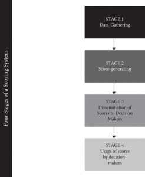
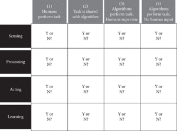

John Danaher
约翰-丹纳赫
The Oxford Handbook of Philosophy of Technology
牛津技术哲学手册》（The Oxford Handbook of Philosophy of Technology
Edited by Shannon Vallor
编辑：Shannon Vallor
Subject: Philosophy, Philosophy of Science Online Publication Date: Nov 2020
主题:哲学, 科学哲学 在线出版日期:2020年11月
DOI: 10.1093/oxfordhb/9780190851187.013.16
DOI: 10.1093/oxfordhb/9780190851187.013.16
Abstract and Keywords
摘要和关键词
There is a growing sense of unease around algorithmic modes of governance (“algocracies”) and their impact on freedom. Contrary to the emancipatory utopianism of digital enthusiasts, many now fear that the rise of algocracies will undermine our freedom. Nevertheless, there has been some struggle to explain exactly how this will happen. This chapter tries to address the shortcomings in the existing discussion by arguing for a broader conception of freedom as well as a broader conception of algocracy. Broadening the focus in this way enables one to see how algorithmic governance can be both emancipatory and enslaving, and provides a framework for future development and activism around the creation of this technology.
围绕算法治理模式（"algocracies"）及其对自由的影响，人们越来越感到不安。与数字爱好者的解放性乌托邦主义相反，许多人现在担心，algocracies的崛起将破坏我们的自由。然而，要准确地解释这种情况将如何发生，还存在着一些困难。本章试图通过论证更广泛的自由概念以及更广泛的藻类民主概念，来解决现有讨论中的不足之处。以这种方式扩大重点，使人们能够看到算法治理如何既能解放又能奴役，并为围绕这一技术的创造的未来发展和活动提供一个框架。
Keywords: freedom, autonomy, algocracy, algorithmic governance, non-interference, non-domination, manipula, tion, coercion
关键词： 自由、 自治、算法 民主、 算法治理、 不干涉、 不支配、 操纵、胁迫
We live in an age of algorithmic governance. Advances in computing technology have created a technological infrastructure that permeates, shapes, and mediates our everyday lives. From personal computers to smartphones, from high street banks to high school playgrounds, from dawn to dusk, we are continually monitored, nudged, and reminded by a growing network of “smart” devices. The native language of these devices is that of the algorithm. We are nestled inside a web of them: algorithms that collect, parse, and sort our data; algorithms that spot patterns and learn from their mistakes; algorithms that issue instructions to the world.
我们生活在一个算法治理的时代。计算技术的进步创造了一个技术基础设施，它渗透、塑造和调解着我们的日常生活。从个人电脑到智能手机，从街头银行到高中操场，从黎明到黄昏，我们不断地被一个不断增长的 "智能 "设备网络所监控、催促和提醒着。这些设备的原生语言是算法的语言。我们依偎在一个由它们组成的网络中：收集、解析和分类我们的数据的算法；发现模式并从错误中学习的算法；向世界发出指令的算法。
Scholars in many social science disciplines are now trying to map, analyze, and evaluate the consequences of this rise in algorithmic governance. They give it different names, depending on their disciplinary backgrounds and scholarly interests. Some favor terms such as “algorithmic regulation” (Yeung 2017; 2018) or “algorithmic governmentality” (Rouvroy 2013x; 2015). I favor using the neologism “algocracy,” first coined by the sociologist A. Aneesh (2006; 2009), to describe the phenomenon (Danaher 2016a; 2016b). The label itself is not as important as the phenomenon it is used to describe: the unavoidable and seemingly ubiquitous use of computer-coded algorithms to understand and control the world in which we live.
许多社会科学学科的学者现在正试图绘制、分析和评估这种算法治理的兴起的后果。他们根据自己的学科背景和学术兴趣，给它起了不同的名字。一些人赞成 "算法监管"（Yeung2017; 2018）或 "算法政府性"（Rouvroy2013x;2015）等术语。我赞成使用社会学家A.Aneesh（2006；2009）首次创造的新词 "algocracy "来描述这一现象（Danaher2016a；2016b）。这个标签本身并不重要，重要的是它用来描述的现象：不可避免地、似乎无处不在地使用计算机编码的算法来理解和控制我们所生活的世界。
Within the growing scholarly literature on algocracy, three major debates have emerged.
在越来越多的关于藻类管理的学术文献中，出现了三个主要的辩论。
The first is the debate about privacy and surveillance (Polonetsky and Tene 2013). Contemporary algorithmic governance is made possible through the use of Big Data systems.
首先是关于隐私和监控的辩论（Plonetsky and Tene2013）。当代的算法治理是通过使用大数据系统而实现的。
These systems are what drive machine learning algorithms to develop impressive abilities to sort and mine data. These systems would not be possible without mass surveillance, which always poses a threat to privacy. The second is the debate about bias and inequality (Zarsky 2012; Crawford 2013; O’Neil 2016; Binns 2018; Eubanks 2018; Noble 2018). The machine learning algorithms that are used to develop (among other things) credit scores for bank customers, or to predict likely rates of recidivism among prisoners, are created through the use of “training” data. That is, they learn how to predict future behaviors by spotting patterns in large databanks of past behaviors. There is considerable concern that these databanks, and the patterns that are extrapolated from them, can be biased. Studies have been done trying to highlight the biases that arise in different domains, such as the apparent racial bias of the predictive policing and predictive sentencing algorithms that are widely used in the United States (Ferguson 2017; Binns 2018). The third is the debate about transparency and procedure. A major concern about machine learning algorithms is that they are relatively opaque in how they operate (Pasquale 2015; Danaher 2016b). These algorithms can produce impressive results, but their precise workings are often hidden from view, for both legal and technical reasons (Pasquale 2015; Burrell 2016). They are “black boxes”: changing the world around them without being readily comprehensible to the human beings affected. This threatens many of the procedural values that we hold dear in democratic societies (Citron and Pasquale 2014; Danaher 2016b).
这些系统是推动机器学习算法发展令人印象深刻的数据分类和挖掘能力的原因。如果没有大规模监控，这些系统是不可能的，而大规模监控总是对隐私构成威胁。其次是关于偏见和不平等的辩论（Zarsky2012；Crawford2013；O'Neil2016；Binns2018；Eubanks2018；Noble2018）。用于开发（除其他外）银行客户的信用评分，或预测囚犯中可能的重犯率的机器学习算法，是通过使用 "训练 "数据创建的。也就是说，它们通过发现过去行为的大型数据库中的模式来学习如何预测未来的行为。人们相当担心这些数据库以及从中推断出的模式会有偏差。已经有研究试图强调在不同领域出现的偏见，例如在美国广泛使用的预测性警务和预测性判刑算法的明显种族偏见（Ferguson2017；Binns2018）。第三是关于透明度和程序的辩论。对机器学习算法的一个主要担忧是，它们的运作方式相对不透明（Pasquale2015；Danaher2016b）。这些算法可以产生令人印象深刻的结果，但由于法律和技术原因，它们的精确工作方式往往被隐藏起来（Pasquale2015；Burrell2016）。它们是 "黑盒子"：改变着周围的世界，而受影响的人却不容易理解。这威胁到我们在民主社会中所珍视的许多程序性价值（Citron and Pasquale2014；Danaher2016b）。
Slightly less widely discussed, though every bit as important (Yeung 2017; Frischmann and Selinger 2018), is the impact that algocratic systems have on our freedom. With all these systems monitoring, nudging, and prompting, obvious questions arise about the effects this has on individual choice and behavior. Do algocratic systems promote or undermine our freedom? How should we respond to this? Some people have started to address these questions, but those that do tend to fixate on the threats that algocratic systems pose to our freedom (Yeung 2017; Frischmann and Selinger 2018). This can seem understandable: Anything that monitors, nudges, and suggests must, surely, be corroding our freedom? But in this chapter I argue that this is not necessarily the case. To be more precise, I argue that we should resist any seemingly simple answer to the question of whether algocracy negatively or positively impacts our freedom. Freedom is a complex and multidimensional value, and algocracy is a complex and multidimensional phenomenon. It follows, reasonably enough, that the impact of this technological phenomenon on freedom is multifaceted. It can promote and undermine our freedom at one and the same time. We need to be sensitive to this complexity. Only then will we know what it means to be free in an age of algocracy.
藻类系统对我们的自由的影响，虽然讨论得稍少，但同样重要（Yeung2017; Frischmannand Selinger2018）。随着所有这些系统的监测、催促和提示，出现了关于这对个人选择和行为的影响的明显问题。藻类专家系统是促进还是破坏了我们的自由？我们应该如何应对？一些人已经开始解决这些问题，但那些人往往固定在藻类专家系统对我们的自由构成的威胁上（Yeung2017; Frischmann and Selinger2018）。这似乎可以理解。任何监测、指导和建议的东西，肯定都会腐蚀我们的自由？但在本章中，我认为情况并不一定如此。更准确地说，我认为我们应该抵制任何看似简单的答案，即藻类管理是否对我们的自由产生消极或积极的影响这一问题。自由是一个复杂的、多维的价值，而藻类学是一个复杂的、多维的现象。因此，有理由相信，这种技术现象对自由的影响是多方面的。它可以在同一时间促进和破坏我们的自由。我们需要对这种复杂性保持敏感。只有这样，我们才会知道在一个算法时代，自由意味着什么。
To make this case, the chapter proceeds in three main steps. First, it discusses the nature of freedom, illustrating how it is complex in two distinct, but equally significant ways. Second, it discusses the nature of algocracy, explaining the different forms it can take, and suggesting that there is a large “logical space” of different possible algocratic systems in any given domain. Third, taking this complexity onboard, it presents five mechanisms through which algocratic systems can promote and undermine freedom. In each section, the intention is not so much to reach definitive normative conclusions about the desirability/undesirability of algocratic systems; rather, the intention is to present a series of frameworks for thinking about this issue. Consequently, the chapter is programmatic in nature, favoring breadth of analysis over depth of argumentation.
为了说明这个问题，本章主要分三个步骤进行。首先，它讨论了自由的性质，说明它是如何以两种不同的、但同样重要的方式复杂存在。第二，它讨论了藻类的性质，解释了它可能采取的不同形式，并提出在任何给定的领域中都有一个大的 "逻辑空间"，有不同的藻类系统可能。第三，考虑到这种复杂性，它提出了五种机制，通过这些机制，藻类民主制度可以促进和破坏自由。在每一节中，我们的意图并不是要对藻类民主制度的可取性/不可取性得出明确的规范性结论；而是要提出一系列思考这一问题的框架。因此，本章在性质上是纲领性的，倾向于分析的广度而不是论证的深度。
Think About It
思考一下
To assess the impact of algocracy on freedom we must have some sense of what freedom consists in. There is a long-standing philosophical debate about what we might call
为了评估算法对自由的影响，我们必须对自由的内涵有一定的了解。关于我们可以称之为 "自由 "的东西，在哲学上有一个长期的辩论。
“metaphysical freedom.” This debate focuses on the question of whether humans have free will, and the related question of whether human behavior is causally determined and if that prevents us from having free will. This can be contrasted with the debate about “political” or “social” freedom, which focuses less on the deep metaphysical questions, and more on what it takes to live freely within a particular political arrangement, society or culture. Can you be free if the government imposes sanctions on you for following your conscience on religious matters? Can you be free if your workplace, college or school has a speech code that prevents you from saying and doing certain things? These kinds of questions are central to the political tradition of liberalism (broadly conceived).
"形而上的自由"。这场辩论的重点是人类是否有自由意志的问题，以及与之相关的人类行为是否由因果关系决定，以及这是否阻止我们拥有自由意志。这可以与关于 "政治 "或 "社会 "自由的辩论形成对比，后者较少关注深层次的形而上学问题，而更多关注在特定的政治安排、社会或文化中自由生活所需的条件。如果政府因你在宗教问题上遵循自己的良心而对你实施制裁，你能自由吗？如果你的工作场所、大学或学校有一个言论准则，阻止你说和做某些事情，你能自由吗？这类问题是自由主义（广义）政治传统的核心。
Although both debates are important, I focus on the political and social form of freedom in what follows. The primary reason for this is that I think the positions staked out in the metaphysical debate are largely unaffected by technological and social change. Whether we have free will or not depends on deep (possibly unknowable) structural features of our reality. It is not something that is going to be changed or affected by the development of a new technology like an algocratic system. Furthermore, the metaphysical and political debates already work largely independently of one another in the philosophical literature.
虽然这两场辩论都很重要，但我在下文中着重讨论自由的政治和社会形式。这样做的主要原因是，我认为在形而上学辩论中所坚持的立场在很大程度上不受技术和社会变革的影响。我们是否有自由意志，取决于我们现实的深层（可能是不可知的）结构特征。它不是会被像藻类系统这样的新技术的发展所改变或影响的东西。此外，在哲学文献中，形而上学和政治辩论已经在很大程度上相互独立地发挥作用。
That said, it would be foolish to deny the fact that there is some overlap between the debates. In particular, it is important to realize that those who espouse a compatibilist view of free will — that is, a view which holds that metaphysical freedom is compatible with causal determinism — often develop accounts of what it means to be free that focus on conditions similar to the political ones discussed later in the chapter (e.g., Frischmann and Selinger 2018). Nevertheless, I will not be directly engaging with what compatibilists have to say in the remainder of this chapter.
尽管如此，如果否认这些辩论之间有一些重叠的事实，那将是愚蠢的。特别是，必须认识到，那些拥护自由意志的兼容主义观点的人--即认为形而上学的自由与因果决定论兼容的观点--往往会发展出对自由的含义的描述，其重点是与本章后面讨论的政治条件类似的条件（例如，Frischmann和Selinger2018）。尽管如此，在本章的其余部分，我不会直接参与兼容主义者所说的内容。
Even if we limit the focus to the political form of freedom, there is still much that needs to be clarified if we are going to assess the impact of algocracy on it. This is because political freedom is complex in two distinct ways: (1) it is complex with respect to the conditions that need to be satisfied in order to protect it; and (2) it is complex with respect to the way in which it is valued. Let’s consider both forms of complexity in more detail. 1
即使我们把重点限制在自由的政治形式上，如果我们要评估藻类民主对它的影响，仍有许多东西需要澄清。这是因为政治自由在两个不同方面是复杂的。(1)在保护政治自由所需满足的条件方面，它是复杂的；(2)在评价政治自由的方式方面，它是复杂的。让我们更详细地考虑这两种形式的复杂性。1
With respect to the first form of complexity, it is obvious that there are many conceptions of freedom out there and that within these conceptions different conditions are identified as being freedom-promoting or freedom-undermining. It is not hard to find examples of this. The intellectual historian, Quentin Skinner, for instance, has mapped out a genealogy of all the different conceptions of freedom that have been defended since the birth of modern “liberal” political philosophy in the seventeenth century (Skinner 2008a, 2008b, and 2012). He argues that this genealogy has three main branches to it. First, there are those who insist that to be free means that you are free of interference, where interference can consist of the use of physical force or coercive threats to direct behavior. Second, there are those who insist that to be free means that you act in a way that is consistent with your authentic self, where this involves some consistency between action and your personal values or intrinsic nature. And third, there are those that insist that to be free means to be free from domination (Pettit
关于第一种形式的复杂性，很明显，外面有许多关于自由的概念，在这些概念中，不同的条件被认定为是促进自由或破坏自由的。这方面的例子并不难找。例如，知识分子历史学家昆廷-斯金纳（Quentin Skinner）为现代 "自由主义 "政治哲学在十七世纪诞生以来所捍卫的所有不同的自由概念绘制了一个谱系（斯金纳，2008a，2008b，和2012）。他认为，这个谱系有三个主要分支。首先，有些人坚持认为，自由意味着你可以不受干扰，而干扰可以包括使用武力或胁迫性威胁来指导行为。第二，有人坚持认为，自由意味着你的行为与你的真实自我相一致，这涉及到行动与你的个人价值或内在本质之间的某种一致性。第三，有些人坚持认为，自由意味着不受支配（Pettit
The first and third branches correspond to the idea of “negative” liberty; the second corresponds to the idea of “positive” liberty.
第一和第三分支对应的是 "消极 "自由的理念；第二分支对应的是 "积极 "自由的理念。
The philosophers Christian List and Laura Vallentini (2016) take a more abstract approach. They argue that if you survey the literature on political freedom, it is possible to discern from this a “logical space” in which the various conceptions of freedom arise. This might sound like a daunting idea, but it is quite straightforward. You can construct a logical space by identifying the different dimensions along which theories vary. List and Vallentini argue that there are two such dimensions in the case of freedom. They argue that most theorists agree that interference by other agents is something that undermines freedom, but they then disagree on two things: (1) whether that interference is freedom-undermining only if it exists in the actual world or if it can be freedom-undermining if it exists in other possible worlds that are similar to our own (this defines the “modal dimension” of the logical space); and (2) whether some forms of interference should not be taken to undermine freedom because they are morally justified or whether moral and immoral forms of interference should both be taken to undermine freedom (the “moral dimension” of the logical space). Using these two dimensions, List and Vallentini construct a two-by-two matrix that defines four logically possible concepts of freedom. Two of them (those that focus on interferences in the actual world only) correspond to classical liberal theories of freedom as non-interference, similar to those discussed by Skinner. One of them (the one that focuses on the absence of immoral interference across several possible worlds) corresponds to the theory of freedom as non-domination, which is favored by Skinner and Philip Pettit. Finally, there is something that List and Vallentini call the theory of freedom as independence (which involves the absence of moral and immoral interference across several possible worlds), which they argue has been neglected in the debate thus far.
哲学家Christian List和Laura Vallentini（2016）采取了一种更抽象的方法。他们认为，如果你调查关于政治自由的文献，就有可能从中看出一个 "逻辑空间"，其中产生了各种自由的概念。这听起来像是一个令人生畏的想法，但其实是很直接的。你可以通过识别理论不同的维度来构建一个逻辑空间。利斯特和瓦伦蒂尼认为，就自由而言，有两个这样的维度。他们认为，大多数理论家都同意，其他代理人的干涉是破坏自由的东西，但他们在两件事上存在分歧。(1)这种干扰是否只有在实际世界中存在才会破坏自由，或者如果它存在于与我们的世界相似的其他可能世界中，是否也会破坏自由（这定义了逻辑空间的 "模式维度"）；以及(2)是否某些形式的干扰不应该被视为破坏自由，因为它们在道德上是合理的，或者是否道德的和不道德的干扰形式都应该被视为破坏自由（逻辑空间的 "道德维度"）。利用这两个维度，List和Vallentini构建了一个二乘二的矩阵，定义了四个逻辑上可能的自由概念。其中两个（只关注实际世界的干扰）对应于古典自由主义的自由理论，即非干扰，类似于斯金纳所讨论的那些。其中一个（注重在几个可能的世界中没有不道德的干扰的那个）对应于斯金纳和菲利普-佩蒂特所赞成的作为非支配的自由理论。最后，还有一种被List和Vallentini称为 "作为独立的自由 "的理论（它涉及在几个可能的世界中不存在道德和不道德的干扰），他们认为这种理论在迄今为止的辩论中被忽视了。
One more example of the complexity of freedom can be found in discussions of autonomous decision making. The relationship between freedom and autonomy is, itself, somewhat complex, with one popular account holding that the former is a “local” property that applies to specific choices (was this choice free?) whereas the latter is a “global” property that applies across someone’s lifetime (is this person living an autonomous life?) (Dworkin 1988). For present purposes I will treat them as equivalent concepts. The important point for now is that within the debate about autonomy there are several conditions that need to be satisfied in order for a choice (or a life) to count as autonomous.
关于自由的复杂性，还有一个例子可以在关于自主决策的讨论中找到。自由和自主之间的关系本身就有些复杂，一种流行的说法认为，前者是一种适用于具体选择的 "局部 "属性（这个选择是自由的吗），而后者是一种适用于某人一生的 "整体 "属性（这个人的生活是自主的吗）（德沃金1988）。为了目前的目的，我将把它们视为等同的概念。目前重要的一点是，在关于自主性的辩论中，有几个条件需要得到满足，才能使一个选择（或一个生命）算作自主的。
Everyone agrees on the basic idea — to be autonomous means that you are, in some sense, the “author” of your own life/choices — but there are differences when it comes to the critical sub-conditions of autonomy (Killmister 2017). To give but one example of this, consider the theory of autonomy that was first proposed by Joseph Raz back in the 1980s. This theory focuses on three conditions that need to be satisfied if a particular choice is to count as autonomous:
每个人都同意这个基本观点--自主意味着在某种意义上，你是自己生活/选择的 "作者"--但在涉及到自主的关键子条件时，却存在着分歧（Killmister2017）。仅举一个例子，考虑一下约瑟夫-拉兹早在20世纪80年代首次提出的自主性理论。该理论侧重于三个条件，如果一个特定的选择被认为是自主的，就需要满足这些条件。
If a person is to be maker or author of his own life then he must have the mental abilities to form intentions of a sufficiently complex kind, and plan their execution.
如果一个人要成为他自己生活的创造者或作者，那么他必须有心理能力来形成足够复杂的意图，并计划其执行。
These include minimum rationality, the ability to comprehend the means required to realize his goals, the mental faculties necessary to plan actions, etc. For a person to enjoy an autonomous life he must actually use these faculties to choose what life to have. There must in other words be adequate options available for him to choose from. Finally, his choice must be free from coercion and manipulation by others, he must be independent. (Raz 1986, 373)
这些包括最低限度的理性，理解实现他的目标所需的手段的能力，计划行动所需的心理能力，等等。一个人要享受自主的生活，就必须实际使用这些能力来选择要过什么样的生活。换句话说，必须有足够的选项供他选择。最后，他的选择必须不受他人的胁迫和操纵，他必须是独立的。(Raz1986, 373)
The three conditions of autonomy embedded in this quoted passage are (1) the person must have the minimum rationality to plan actions that will allow them to achieve their goals; (2) they must have adequate options available to choose from; and (3) they must be independent, which Raz takes to mean free from coercion and manipulation when making and implementing their choices.
这段话中所包含的自主性的三个条件是：（1）人必须有最起码的理性来计划行动，使他们能够实现自己的目标；（2）他们必须有足够的选择来进行选择；（3）他们必须是独立的，拉兹认为这意味着在做出和实施选择时不受胁迫和操纵。
I could go on, but I think the point is made. Theories of freedom are complex. There are different accounts of what it means to be free and within those different accounts many distinct freedom-undermining and promoting conditions have been identified. It is tempting at this point to deal with this complexity by throwing your hands up in despair and simply picking and defending one preferred theory. That is what many people do. But I believe that this is mistaken. There is much less tension and disagreement between the different accounts than first appears to be the case. Indeed, any apparent tension can be largely dissolved by acknowledging that all the different accounts identify some conditions that are relevant to freedom, but that the accounts vary in the breadth of the conditions they deem to be important or in how much weight they place on them. It is possible to accommodate this variety by viewing freedom as a scalar property and not a binary one. In other words, by accepting that people can be more or less free, and not simply free or un-free. Assessing the scale of freedom that any one individual has will then depend on the various conditions considered above (rationality, adequate options, absence of interference and/or domination).
我可以继续说下去，但我认为重点已经提出。自由的理论是复杂的。关于自由的含义有不同的说法，而在这些不同的说法中，有许多不同的破坏和促进自由的条件被确认。在这一点上，人们很想通过绝望地举起手来处理这种复杂性，并简单地挑选和捍卫一种偏好的理论。这就是许多人所做的。但我认为这是错误的。不同说法之间的紧张和分歧比最初看起来的要少得多。事实上，任何明显的紧张关系在很大程度上都可以通过承认所有不同的说法都确定了一些与自由相关的条件，但这些说法在他们认为重要的条件的广度和他们对这些条件的重视程度上有所不同。通过将自由视为一种标量属性而不是二元属性，就有可能适应这种多样性。换句话说，通过接受人们可以有更多或更少的自由，而不是简单的自由或不自由。评估任何一个人所拥有的自由的规模将取决于上面考虑的各种条件（理性、充分的选择、没有干扰和/或支配）。
This doesn’t mean, however, that we should view freedom as something that varies along a single dimension and that degrees of freedom can be easily determined by one’s location along that single dimension. As should be clear from the preceding discussion, the different conditions of freedom identified by the different theories of freedom suggest that the reality is far more complex. It is more likely that the conditions define a multi-dimensional space and that one’s degree of freedom depends on where one fits within that multi-dimensional space. Models of this multi-dimensional space could be quite conceptually unwieldy, depending on whether you are a “lumper” or “splitter” when it comes to defining the different dimensions. For ease of understanding, and for illustrative purposes, I will adopt a three-dimensional model of freedom over the remainder of this chapter.
然而，这并不意味着我们应该把自由看作是沿着单一维度变化的东西，而且自由度可以很容易地通过一个人在这个单一维度上的位置来确定。从前面的讨论中可以看出，不同的自由理论所确定的不同自由条件表明，现实要复杂得多。更有可能的是，这些条件定义了一个多维空间，一个人的自由度取决于他在这个多维空间中的位置。这个多维空间的模型在概念上可能相当复杂，取决于你在定义不同维度时是 "跳跃者 "还是 "分裂者"。为了便于理解，也为了说明问题，我将在本章的剩余部分采用一个三维自由模型。
This model focuses on the following three dimensions of freedom: 1. The Intelligibility/Rationality Dimension: which measures the extent to which one can make decisions that are based on identifying, weighing, and assessing options for their fit with one’s preferences and plans. This does not focus on some narrow form of “economic” rationality; it focuses on the ability to make decisions in an intelligible fashion.
这个模型侧重于自由的以下三个维度：1. 可理解性/理性维度：衡量一个人能够在多大程度上做出基于识别、权衡和评估选项是否符合自己的偏好和计划的决定。这并不着重于某种狭隘的 "经济 "理性；它着重于以可理解的方式做出决定的能力。
2. The Manipulation Dimension: which measures the extent to which one’s decisions are free from manipulation, where manipulation can come in the form of physical force, mental coercion, brainwashing, cultural indoctrination and so on. Some of these are classed as highly manipulative, and some less so.
2. 操纵维度：衡量一个人的决定在多大程度上不受操纵，操纵的形式可以是身体上的力量、精神上的胁迫、洗脑、文化灌输等等。其中有些被归类为高度操纵性，有些则较少。
3. The Domination Dimension: which measures the extent to which one’s decisions are free from domination, where domination involves the presence of some authorizing agent from whom one must tacitly or explicitly get approval in order to act.
3. 支配维度：衡量一个人的决定在多大程度上不受支配，其中支配涉及到一些授权机构的存在，一个人必须默许或明确地得到批准才能行动。
You could probably parse the dimensional space in different ways, but I think each of these is a defensible inclusion within a complex account of freedom. I also think that if we understand them to define distinct dimensions of freedom, we can appreciate something important: the possible need for tradeoffs across the different dimensions. It may turn out, for example, that completely avoiding all forms of manipulation will require that we sacrifice some degree of intelligibility, or that removing some forms of manipulation requires accepting some forms of domination. In other words, it may be impossible to maximize along all dimensions simultaneously. We may find out that we have to prioritize or compromise when it comes to protecting our freedom.
你也许可以用不同的方式来解析这个维度空间，但我认为每一个维度都是一个可辩护的包含在一个复杂的自由账户中。我还认为，如果我们把它们理解为定义自由的不同维度，我们就可以理解一些重要的东西：在不同维度之间可能需要进行权衡。例如，结果可能是，完全避免所有形式的操纵将需要我们牺牲某种程度的可理解性，或者消除某些形式的操纵需要接受某些形式的支配。换句话说，可能不可能同时沿着所有维度实现最大化。我们可能会发现，在保护我们的自由方面，我们必须优先考虑或妥协。
This is still only the first form of complexity we must confront when thinking about freedom — the complexity of the conditions/dimensions of freedom. We still have to confront the complexity with respect to how freedom is valued. It is all well and good to have a clear sense of what freedom requires, but this is useless if we don’t know why we are so obsessed with it in the first place. Fortunately, there is less complexity to contend with here. There are essentially three different approaches we can take to the value of freedom. We can view freedom as an intrinsic value; that is, something worth protecting and promoting in and of itself. We can view it as an instrumental value; that is, something worth protecting because it helps us to achieve other valuable ends like well-being or flourishing. Or we can view it as a bit of both; that is, as something that is both intrinsically valuable and instrumentally valuable.
这仍然只是我们在思考自由时必须面对的第一种形式的复杂性--自由的条件/层面的复杂性。我们还必须面对如何评价自由方面的复杂性。对自由的要求有一个清晰的认识是很好的，但如果我们不知道为什么我们首先对它如此痴迷，这就没有用了。幸运的是，这里要面对的复杂性较少。对于自由的价值，我们基本上可以采取三种不同的方法。我们可以将自由视为一种内在的价值；也就是说，它本身就值得保护和促进。我们可以把它看作是一种工具性的价值；也就是说，值得保护的东西，因为它可以帮助我们实现其他有价值的目的，如福祉或繁荣。或者我们可以把它看作是两者都有的；也就是说，它是一种既具有内在价值又具有工具价值的东西。
There are some approaches to the value of freedom that sit outside this simple tripartite scheme. For instance, Ian Carter (1995 and 1999) has defended the view that freedom is an “independent” value, which he defines as being slightly distinct from an intrinsic value. Likewise, I have argued that freedom should be viewed as an axiological catalyst; that is. as something that makes good things better and bad things worse (Danaher 2018). In saying this, I was motivated by the fact that a good deed freely done is usually judged more favorably than a good deed performed under coercion; and someone who killed a bunch of people freely is usually judged less favorably than someone who did so unfreely.
对于自由的价值，有一些方法是在这个简单的三方方案之外的。例如，伊恩-卡特（1995年和1999年）为自由是一种 "独立 "价值的观点辩护，他将其定义为与内在价值略有不同。同样，我也认为自由应该被看作是一种公理上的催化剂；也就是说，作为一种使好事变好、坏事变坏的东西（Danaher2018）。在说这句话时，我的动机是，自由地做的好事通常比在胁迫下做的好事得到更有利的评价；而一个自由地杀了一群人的人，通常比不自由地做的人得到更不利的评价。
It is also possible to think that freedom is completely devoid of value and shouldn’t be protected at all.
也有可能认为自由是完全没有价值的，根本不应该受到保护。
The subtleties of these other positions lie beyond the scope of this paper, but even if we stick with the tripartite view there is still plenty of complexity that needs to be worked out. If we value freedom intrinsically, then we will need to decide where freedom fits within the pantheon of other values like friendship, knowledge, pleasure, flourishing and so on. Is freedom the single most important value? Does it rank equally among these other values? Or is it less important? Similarly, if we value freedom instrumentally, then we need to determine how important a means to other valuable ends it is. Could it be that there are other, more efficient, ways to achieve these ends? Or is freedom the single most reliable means to these ends? How we answer these questions will determine, in large part, our attitude toward a phenomenon like algocracy. If we think freedom is the single most important value, then we might view any threat to it as a major social problem that needs to be addressed with utmost speed. If we think it is just one value among many, and possibly not that important, we might be willing to sacrifice some degree of freedom to protect these other ends.
这些其他立场的微妙之处超出了本文的范围，但即使我们坚持三方的观点，仍然有很多复杂的问题需要解决。如果我们从本质上看重自由，那么我们就需要决定自由在友谊、知识、快乐、繁荣等其他价值的万神殿中的位置。自由是唯一最重要的价值吗？它在这些其他价值中的地位是否相同？还是它不那么重要？同样地，如果我们对自由的评价是工具性的，那么我们就需要确定它作为实现其他有价值的目的的手段有多重要。会不会有其他更有效的方法来实现这些目的？还是自由是实现这些目的的唯一最可靠的手段？我们如何回答这些问题，将在很大程度上决定我们对像藻类民主这样的现象的态度。如果我们认为自由是唯一最重要的价值，那么我们可能会把对它的任何威胁视为一个需要以最快速度解决的主要社会问题。如果我们认为它只是众多价值中的一个，而且可能并不那么重要，那么我们可能愿意牺牲一定程度的自由来保护这些其他目的。
I won’t say much about how we should or might value freedom in what follows. I will focus, instead, on the question of how algocracy might affect the various dimensions of freedom. But, clearly, the weight of the arguments I make, and the attitude you should take toward them, will depend significantly on how value freedom.
在接下来的内容中，我不会多说我们应该或可能如何评价自由。相反，我将把重点放在藻类民主如何影响自由的各个层面。但是，很明显，我所提出的论点的分量，以及你应该对它们采取的态度，将在很大程度上取决于如何评价自由。
3. The Logical Space of Algocracy
3. Algocracy的逻辑空间
The complexity of freedom is just one side of the coin. We also have to consider the complexity of algocracy. To do this, we first need to have a clear sense of what algocracy is. I said at the start that “algocracy” is my preferred term for an increasingly familiar phenomenon: the use of big data, predictive analytics, machine learning, AI, robotics (etc.) in any system that governs human behavior. The term was originally coined by the sociologist A. Aneesh (2006; 2008). Aneesh’s main interest was in delineating between the different forms that human governance systems can take. A governance system can be defined, roughly, like this:
自由的复杂性只是问题的一个方面。我们还必须考虑algocracy的复杂性。要做到这一点，我们首先需要对什么是algocracy有一个清晰的认识。我在一开始就说过，"algocracy "是我对一个越来越熟悉的现象的首选术语：在任何管理人类行为的系统中使用大数据、预测分析、机器学习、人工智能、机器人技术（等等）。这个词最初是由社会学家A.Aneesh（2006；2008）创造的。Aneesh的主要兴趣在于划分人类治理系统可能采取的不同形式。一个治理系统可以被粗略地这样定义。
Governance system: Any system that structures, constrains, incentivizes, nudges, manipulates or encourages different types of human behavior.
治理系统。任何结构化、约束、激励、诱导、操纵或鼓励不同类型人类行为的系统。
This is a very broad definition, but this is deliberate since “governance” is taken to be a broad concept. It’s natural to speak of governance as something that arises at an institutional or governmental level, and that is certainly an obvious home for the concept, but it is also something that arises outside of a formal institutional context (e.g., governance by tacit social norms) and at an individual level (what tools do I use to govern my own behavior). Aneesh drew a contrast between three main types of governance system in his research: markets, bureaucracies and algocracies. A market is a governance system in which prices structure, constrain, incentivize, nudge (etc.) human behavior; a bureaucracy is a governance system in which rules and regulations structure, constrain, incentivize, nudge (etc.) human behavior; and an algocracy is: Algocracy: A governance system in which computer coded algorithms structure, constrain, incentivize, nudge, manipulate or encourage different types of human behavior.3
这是一个非常广泛的定义，但这是故意的，因为 "治理 "被认为是一个广泛的概念。把治理说成是在机构或政府层面产生的东西是很自然的，这当然是这个概念的一个明显的归宿，但它也是在正式的机构背景之外（例如，通过默契的社会规范进行治理）和在个人层面（我用什么工具来管理我自己的行为）产生的东西。Aneesh在他的研究中对三种主要类型的治理系统进行了对比：市场、官僚体制和藻类体制。市场是一个治理系统，其中价格构造、约束、激励、怂恿（等）人类行为；官僚体制是一个治理系统，其中规则和条例构造、约束、激励、怂恿（等）人类行为；而藻类民主是。Algocracy。一个治理系统，其中计算机编码的算法结构、约束、激励、怂恿、操纵或鼓励不同类型的人类行为。3
Aneesh used the concept to understand how workers participated in a globalized economy. Aneesh thought it was interesting how more workers in the developing world were working for companies and organizations that were legally situated in other jurisdictions.
Aneesh用这个概念来理解工人如何参与全球化的经济。阿内什认为，发展中世界的更多工人为合法位于其他司法管辖区的公司和组织工作，这很有意思。
He argued that this was due to new technologies (computers + internet) that facilitated remote work. This gave rise to new algocratic governance systems within corporations, which sidestepped or complemented the traditional market or bureaucratic governance systems within such organizations.
他认为，这是由于新技术（计算机+互联网）促进了远程工作。这在公司内部产生了新的藻类治理系统，它避开或补充了这些组织内的传统市场或官僚治理系统。
That’s the origin of the term. I tend to use the term in a related but slightly different sense. I certainly look on algocracies as kinds of governance system — ones in which behavior is shaped by algorithmically programmed architectures. But I also use the term by analogy with “democracy,” “aristocracy,” and “technocracy.” In each of those cases, the suffix “cracy” is used to mean “rule by” and the prefix identifies whoever does the ruling.
这就是这个词的起源。我倾向于在一个相关但略有不同的意义上使用这个术语。我当然认为藻类是治理系统的一种--其中的行为是由算法编程的架构形成的。但我也通过与 "民主"、"贵族 "和 "技术民主 "的类比来使用这个术语。在每一种情况下，后缀 "cracy "被用来表示 "统治"，而前缀则表示谁在进行统治。
So “democracy” is “rule by the people” (the demos), aristocracy is “rule by aristocrats”
因此，"民主 "是 "人民的统治"（demos），贵族制是 "贵族的统治"
and so on. Algocracy then can also be taken to mean “rule by algorithm,” with the emphasis being on rule. In other words, for me “algocracy” captures the authority that is given to algorithmically coded architectures in contemporary life. Whenever you are denied a loan by a credit-scoring algorithm; whenever you are told which way to drive by a GPS routing-algorithm; whenever you are prompted to exercise a certain way or eat a certain food by a health and fitness app you are living within an algocratic system.
等等。那么Algocracy也可以被理解为 "算法的统治"，重点在于统治。换句话说，对我来说，"algocracy "抓住了当代生活中被赋予算法编码架构的权威。每当你被信用评分算法拒绝贷款时，每当你被GPS路由算法告知开车的方向时，每当你被健康和健身应用程序提示以某种方式锻炼或吃某种食物时，你都生活在一个藻类系统中。
With this understanding in place, we can already begin to see that algocracy is a complex phenomenon. Algocratic systems arise in different domains (financial, legal, bureaucratic, personal) and take different forms. There have been several attempts to bring order to this complexity. One method of doing so is to focus on the various stages involved in the construction and implementation of an algocratic system. Algocratic systems do things: they make recommendations; they set incentives; they structure possible forms of behavior; and so on. How do they manage this? Much of the answer lies how they use data.
有了这种理解，我们已经可以开始看到，藻类民主是一种复杂的现象。Algocratic系统出现在不同的领域（金融、法律、官僚、个人），采取不同的形式。已经有一些尝试来为这种复杂性带来秩序。其中一个方法是，把重点放在构建和实施民主制度的各个阶段上。Algocratic系统做的事情：他们提出建议；他们设置激励机制；他们构建可能的行为形式；等等。他们是如何管理这些的呢？大部分的答案在于他们如何使用数据。
Zarsky (2013) suggests that there are three main stages in this: (1) a data collection stage (where information about the world and relevant human beings is collected and fed into the system); (2) a data analysis stage (where algorithms structure, process and organize that data into useful or salient chunks of information); and (3) a data usage stage (where the algorithms make recommendations or decisions based on the information they have processed). Citron and Pasquale (2014) develop a similar framework, using slightly different terminology, that focuses on four main stages. This is illustrated in Figure 1.
Zarsky（2013）认为，这其中有三个主要阶段。(1）数据收集阶段（收集关于世界和相关人类的信息并输入系统）；（2）数据分析阶段（算法将这些数据结构化、处理并组织成有用或突出的信息块）；以及（3）数据使用阶段（算法根据其处理的信息做出建议或决定）。Citron和Pasquale（2014）开发了一个类似的框架，使用的术语略有不同，主要集中在四个主要阶段。这在图1中得到了说明。
Figure 1 Four stages of a scoring system.
图1 打分系统的四个阶段。
Effectively, what they do is break Zarsky’s “usage” stage into two separate stages: a dissemination stage (where the information processed and analyzed by the algorithms gets communicated to a decision maker) and a decision-making stage (where the decision maker uses the information to do something concrete to an affected party, e.g., deny them a loan because of a bad credit score).
实际上，他们所做的是将扎尔斯基的 "使用 "阶段分成两个独立的阶段：传播阶段（由算法处理和分析的信息被传达给决策者）和决策阶段（决策者使用这些信息对受影响的一方做一些具体的事情，例如，因为信用评分不好而拒绝他们的贷款）。
In doing this Citron and Pasquale make an interesting assumption about how the algocratic system relates to the human beings who are affected by it. They assume that the primary function of an algocratic system is to generate recommendations to humans, who still retain ultimate decision-making authority. But this may not be the case. Indeed, as they themselves note, there are different ways in which an algocratic system could connect with (or avoid connecting with) the humans whose behavior is being governed.
在这样做的时候，Citron和Pasquale对藻类专家系统与受其影响的人类的关系做了一个有趣的假设。他们假设藻类专家系统的主要功能是向人类提出建议，而人类仍然保留最终的决策权。但情况可能并非如此。事实上，正如他们自己所指出的，一个藻类专家系统可以通过不同的方式与人类联系（或避免与人类联系），而人类的行为正在受到制约。
Adopting a simple tripartite framework originally developed in the military context, they distinguish between human-in-the-loop systems (where humans retain ultimate decision-making authority), human-on-the-loop systems (where humans retain veto power over the algocratic system) and human-off-the-loop systems (where the system functions without human input or oversight).
他们采用了最初在军事背景下开发的一个简单的三方框架，区分了人在环形系统（人类保留最终决策权）、人在环形系统（人类保留对藻类系统的否决权）和人在环形系统（系统在没有人类输入或监督的情况下运作）。
Other theorists have offered similar classificatory breakdowns which focus more specifically on the question that interests me in this chapter, that is, the way in which these systems might undermine/promote individual freedom. Gal (2018) argues that there are at least four different kinds of algocratic system, each of which has a distinctive effect on individual choice. The four kinds are (1) “stated preference” systems, in which the human users specify exactly what they want the system to do and the system assists in achieving this outcome; (2) “menu of preferences” systems, in which the human user doesn’t specify their preferred outcome but chooses from a menu of options provided to them by the algorithm; (3) “predicted preference” systems, in which the system, based on data-mining (from a large sample population), tries to predict what an individual user will want and target options at them accordingly; and (4) “self-restraint preference” systems, in which the algorithm functions as a pre-commitment device, favoring the user’s long-term interests (perhaps stated; perhaps predicted) over their immediate interests. As you might imagine, these different kinds of algocratic system have different consequences for individual autonomy. A stated preference algorithm, for example, might seem to be obviously freedom-promoting; a predicted preference algorithm much less so.
其他理论家也提供了类似的分类细分，更具体地关注我在本章中感兴趣的问题，即这些系统可能削弱/促进个人自由的方式。Gal（2018）认为，至少有四种不同的藻类系统，每一种都对个人选择有独特的影响。这四种是：（1）"陈述偏好 "系统，人类用户确切地指定他们希望系统做什么，系统协助实现这一结果；（2）"偏好菜单 "系统，人类用户不指定他们的偏好结果，而是从算法提供给他们的选项菜单中进行选择。(3)"预测 偏好 "系统，在这种系统中，系统基于数据挖掘（从大量的样本人口中），试图预测个人用户会想要什么，并相应地针对他们的选项；以及 (4) "自我约束偏好 "系统，在这种系统中，算法作为一个预先承诺的装置，偏向于用户的长期利益（也许声明的；也许预测的）而不是他们眼前的利益。正如你可能想象的那样，这些不同种类的算法系统对个人自主权有不同的后果。例如，一个声明的偏好算法似乎明显是促进自由的；而一个预测的偏好算法就不那么容易了。
In a similar, but more complex, vein, Yeung (2018) tries to develop a taxonomy of algocratic systems. This taxonomy focuses on three main variables that determine the form that an algocratic system can take. Each of these three variables has two “settings”, making for eight possible forms of algocracy. The first dimension concerns the nature of the algorithm itself. Is it fixed or adaptive? The second dimension concerns the way in which the algorithmic system monitors individual behavior. Does it “react” to the user’s violation of its behavioral standards or does it try to predict and pre-empt the user? The third dimension concerns the role that human regulators play in the system. Does the system automatically enforce its standards (perhaps giving humans a veto power) or does it simply recommend (perhaps strongly) enforcement options to them? Again, the different settings on each of these dimensions would appear to be relevant when it comes to assessing the impact of these systems on individual choice and autonomy. Intuitively, it seems like a system that anticipates and pre-empts violations of prescribed standards, and that automatically enforces sanctions on those violations, poses more of a threat to freedom than a system that simply reacts and recommends. But, again, being sensitive to this complexity is key in any analysis of the freedom-promoting or freedom-undermining effect of algocracy.
在类似但更复杂的情况下，Yeung（2018）试图开发一个藻类专家系统的分类法。这个分类法侧重于三个主要变量，它们决定了一个藻类民主制度可以采取的形式。这三个变量中的每一个都有两个 "设置"，使得藻类民主有八个可能的形式。第一个维度涉及算法本身的性质。它是固定的还是适应性的？第二个维度涉及算法系统监测个人行为的方式。它是对用户违反其行为标准作出 "反应"，还是试图预测和预先阻止用户的行为？第三个维度涉及人类监管者在系统中扮演的角色。系统是自动执行其标准（也许给人类一个否决权），还是仅仅向他们推荐（也许是强烈的）执行方案？同样，在评估这些系统对个人选择和自主性的影响时，每个维度的不同设置似乎都是相关的。直观地看，一个预测并预先阻止违反规定标准的行为，并对这些违反行为自动实施制裁的系统，似乎比一个简单反应和建议的系统对自由构成更大的威胁。但是，再次强调，对这种复杂性的敏感是分析藻类民主的自由促进或自由破坏效应的关键。
Each of these attempts to bring order to complexity has some value to it. Nevertheless, I think there is another way of doing this that is both more illuminating and more revelatory when it comes to evaluating the impact of algocracy on freedom. This method of bringing order to complexity is inspired by the “logical space” method of List and Vallentini (discussed in the previous section) and builds upon the insights provided by all the thinkers mentioned in the previous paragraphs of this section. It starts by identifying three major variables that determine the form that algocratic systems take.
这些为复杂性带来秩序的尝试都有一定的价值。然而，我认为在评估藻类学对自由的影响时，还有另一种方法更具有启发性和启示性。这种为复杂性带来秩序的方法受到List和Vallentini的 "逻辑空间 "方法的启发（在上一节中讨论过），并建立在本节前几段中提到的所有思想家提供的见解之上。它首先确定了决定藻类学系统形式的三个主要变量。
The first is the particular domain or type of decision making that is affected by the system. As already mentioned, algocracies arise in different contexts, including financial, governmental, legal, personal, medical and so on. Within each of these contexts many different decisions have to be made, for example, decisions about granting loans, investing in shares, allocating welfare benefits, identifying tax cheats, picking which movie to watch next, deciding when to exercise and how, and so on. The possible variation in affected choices is vast. Indeed, it is so vast that it cannot be easily captured in a formal model or conceptual framework. This is why I essentially ignore it for now. This is not because it is unimportant: when figuring out the freedom-promoting or undermining effects of any particular algocratic decision-making procedure, the domain of decision making should always be specified in advance and the relative importance of that domain should be remembered. This is something I emphasize again later in this chapter. For the time being, however, I set it to one side.
首先是受该系统影响的特定领域或决策类型。正如已经提到的，藻类系统出现在不同的背景下，包括金融、政府、法律、个人、医疗等等。在每一种情况下，都必须做出许多不同的决定，例如，关于发放贷款、投资股票、分配福利、识别偷税漏税者、选择下一部电影、决定何时锻炼和如何锻炼等等的决定。受影响的选择的可能变化是巨大的。事实上，它是如此之大，以至于它不容易被一个正式的模型或概念框架所捕捉。这就是为什么我现在基本上忽略了它。这并不是因为它不重要：在计算任何特定的藻类学决策程序对自由的促进或破坏作用时，决策的领域应该总是被事先指定，并且应该记住该领域的相对重要性。这是我在本章后面再次强调的内容。不过，目前我把它放在一边。
The second variable concerns the main components of the decision-making “loop” that is utilized by these agencies. I mentioned Zarsky, Citron, and Pasquale’s attempts to identify the different “stages” in algocratic decision procedures. One thing that strikes me about the stages identified by these authors is how closely they correspond to the stages identified by authors looking at automation and artificial intelligence. For instance, the collection, processing and usage stages identified by Zarsky feel very similar to the sensing, processing and actuating stages identified by AI theorists and information systems engineers. This makes sense. Humans use their intelligence to make decisions and algocratic systems are largely intended to replace or complement human decision makers. It would, consequently, make sense for these systems to break down into those distinct task stages as well. Using the direct analogy with intelligence, I think we can identify four distinct processes undertaken by any algocratic system:
第二个变量涉及这些机构所利用的决策 "循环 "的主要组成部分。我提到Zarsky、Citron和Pasquale试图识别藻类学决策程序中的不同 "阶段"。关于这些作者所确定的阶段，让我印象深刻的一点是，它们与研究自动化和人工智能的作者所确定的阶段有多么接近。例如，Zarsky确定的收集、处理和使用阶段与人工智能理论家和信息系统工程师确定的感知、处理和执行阶段感觉非常相似。这是有道理的。人类使用他们的智慧来做决定，而藻类学系统主要是为了取代或补充人类决策者。因此，这些系统分解成这些不同的任务阶段也是有意义的。利用与智力的直接类比，我认为我们可以确定任何藻类专家系统所进行的四个不同过程。
1. Sensing: the system collects data from the external world.
1. 感知：系统从外部世界收集数据。
2. Processing: the system organizes that data into useful chunks or patterns and combines it with action plans or goals.
2. 处理：系统将这些数据组织成有用的大块或模式，并将其与行动计划或目标相结合。
3. Acting: the system implements its action plans.
3. 行动：该系统实施其行动计划。
4. Learning: the system uses some mechanism that allows it to learn from what it has done and adjust its earlier stages.
4. 学习：系统使用一些机制，使其能够从它所做的事情中学习，并调整其早期阶段。
These four processes provide a more precise characterization of the decision-making “loop” that humans can be in, on, or off. The important point in terms of mapping out the logical space of algocracy is that algorithmically coded architectures could be introduced to perform one or all of these four tasks. Thus, there are subtle and important qualitative differences between the different types of algocratic system, depending on how much of the decision-making process is taken over by the computer-coded architecture.
这四个过程为人类可能处于、开启或关闭的决策 "循环 "提供了一个更精确的特征。就绘制藻类学的逻辑空间而言，重要的一点是，可以引入算法编码的架构来执行这四个任务中的一个或全部。因此，不同类型的藻类系统之间存在着微妙而重要的质量差异，这取决于决策过程中有多少被计算机编码的架构所接管。
In fact, it is more complicated than that and this is what brings us to the third variable.
事实上，它比这更复杂，这就是我们要讨论的第三个变量。
This one concerns the precise relationship between humans and algorithms for each task in the decision-making loop. As I see it, there are four general relationship-types that could arise: (1) humans could perform the task entirely by themselves; (2) humans could share the task with an algorithm; (3) humans could supervise an algorithmic system; and (4) the task could be fully automated, that is, completely under the control of the algorithm.
这个问题涉及到人类和算法之间在决策环路中每项任务的精确关系。在我看来，有四种一般的关系类型可能出现。(1）人类可以完全自己执行任务；（2）人类可以与算法分享任务；（3）人类可以监督算法系统；（4）任务可以完全自动化，即完全由算法控制。
Using these second and third variables, we can construct a grid which we can use to classify algocratic systems. The grid looks something like Figure 2.
使用这些第二和第三变量，我们可以构建一个网格，我们可以用它来对藻类学系统进行分类。这个网格看起来像图2。
Figure 2 Sample grid used to classify algocratic systems.
图2 用来对藻类系统进行分类的样本网格。
This grid tells us that when constructing or thinking about an algocratic system we should focus on the four different tasks in the typical intelligent decision-making loop and ask of each task: how is this task being distributed between the humans and algorithms?
这个网格告诉我们，在构建或思考一个藻类系统时，我们应该关注典型的智能决策循环中的四个不同任务，并对每个任务提出问题：这个任务是如何在人类和算法之间分配的？
When we do this, we see the “logical space” of possible algocratic systems opening up before us.
当我们这样做时，我们看到可能的藻类系统的 "逻辑空间 "在我们面前打开了。
Understanding algocracy in this way has a number of virtues. First, it captures some of the true complexity of algocracy in a way that existing conceptual frameworks do not. It not only tells us that there is a large logical space of possible algocratic systems; it allows us to put some numbers on it. Since there are four stages and four possible relationship-types between humans and computers at those four stages, it follows that there are 44 possible systems (i.e., 256) within any given decision-making domain. That’s a minimum level of complexity. You could also make the logical space more complex by adding further dimensions of variance, depending on how fine-grained you want your analysis of algocracy to be. For instance, computer scientists sometimes distinguish between algorithmic processes that are (1) interpretable and (2) non-interpretable (i.e., capable of being deconstructed and understood by humans or not). That could be an additional dimension of variance since at each stage in the decision-making process humans could be sharing a task with an interpretable or non-interpretable system. This would mean that for each stage in the decision-making process there are eight possible configurations, not just four.
以这种方式理解藻类学有很多优点。首先，它以一种现有概念框架所不具备的方式捕捉到藻类学的一些真正的复杂性。它不仅告诉我们有一个大的逻辑空间，有可能的藻类系统；它还允许我们给它加上一些数字。由于人类和计算机之间在这四个阶段有四种可能的关系类型，因此在任何给定的决策领域有44种可能的系统（即256种）。这是一个最低限度的复杂程度。你也可以通过增加更多的差异维度来使逻辑空间更加复杂，这取决于你希望你的算法分析有多细化。例如，计算机科学家有时会将算法过程区分为（1）可解释的和（2）不可解释的（即，能够被人类解构和理解或不理解）。这可能是一个额外的差异维度，因为在决策过程的每个阶段，人类都可能与一个可解释或不可解释的系统分享一个任务。这将意味着，对于决策过程中的每个阶段，有八个可能的配置，而不仅仅是四个。
That would give us a logical space consisting of 84 possibilities.
这将给我们一个由84种可能性组成的逻辑空间。
Another virtue of the logical space model is that it gives us an easy tool for coding the different possible types of algocratic system. For the initial two-dimensional model, I suggest that this be done using square brackets and numbers. Within the square brackets there would be four separate number locations. Each location would represent one of the four decision-making tasks. From left-to-right this would read: [sensing; processing; acting; learning]. You then replace the names of those tasks with numbers ranging from 1 to 4 and these numbers could then represent the way in which the task is distributed between the humans and algorithms. A value of “1” would be used when the relevant task is performed entirely by humans, and so on. As follows:
逻辑空间模型的另一个优点是，它为我们提供了一个简单的工具，用于对不同类型的藻类系统进行编码。对于最初的二维模型，我建议使用方括号和数字来完成。在方括号中，将有四个独立的数字位置。每个位置将代表四个决策任务中的一个。从左到右是这样的。[感知；处理；行动；学习]。然后，你用1到4的数字替换这些任务的名称，这些数字可以代表任务在人类和算法之间的分配方式。当相关任务完全由人类执行时，将使用 "1 "的数值，以此类推。如下所示。
[1, 1, 1, 1] = Would represent a non-algocratic decision procedure, that is, one in which all the decision-making tasks are performed by humans.
[1, 1, 1, 1] = 会代表一个非民主的决策程序，即所有的决策任务都由人类来完成。
[2, 2, 2, 2] = Would represent an algocratic decision procedure in which each task is shared between humans and algorithms.
[2, 2, 2, 2] = 将代表一个藻类决策程序，其中每个任务由人类和算法共同承担。
[3, 3, 3, 3] = Would represent an algocratic decision procedure in which each task is performed entirely by algorithms, but these algorithms are supervised by humans with some possibility of intervention/veto.
[3, 3, 3, 3] = 将代表一个算法决策程序，其中每个任务完全由算法完成，但这些算法由人类监督，并有一些干预/否决的可能性。
[4, 4, 4, 4] = Would represent an pure algocratic decision procedure in which each task is performed by an algorithm, with no human oversight or intervention.
[4, 4, 4, 4] = 将代表一个纯粹的算法决策程序，其中每个任务都是由算法执行的，没有人类的监督或干预。
If we wanted to use a more complicated three-dimensional logical space, we could simply modify the coding system by adding a letter after each number to indicate the additional variance. For example, if we adopted the interpretability/non-interpretability dimension, we could add “i” or “ni” after each number to indicate whether the step in the process was interpretable (i) or not (ni). As follows:
如果我们想使用更复杂的三维逻辑空间，我们可以简单地修改编码系统，在每个数字后面加一个字母来表示额外的差异。例如，如果我们采用可解释/不可解释的维度，我们可以在每个数字后面加上 "i "或 "ni "来表示该过程中的步骤是可解释的（i）还是不可解释的（ni）。如下所示。
[4i, 4i, 4i, 4i] = Would represent a pure algocratic procedure that is completely interpretable
[4i, 4i, 4i, 4i] = 将代表一个完全可以解释的纯粹的algocratic程序
[4i, 4ni, 4i, 4ni] = Would represent a pure algocratic procedure that is interpretable at the sensing and acting stages, but not at the processing and learning stages.
[4i, 4ni, 4i, 4ni] = 将代表一个纯粹的algocratic程序，在感觉和行动阶段可以解释，但在处理和学习阶段不能解释。
This coding mechanism has some practical advantages. Three are worth mentioning.
这种编码机制有一些实际优势。其中有三个值得一提。
First, it gives designers and creators of algocratic systems a quick tool for figuring out what kind of system they are creating and the potential challenges that might be raised by the construction of that system. Second, it gives researchers something to use when investigating real-world algocratic systems and seeing whether they share further properties (such as their freedom-undermining or promoting potential). For instance, you could start investigating all the [3, 3, 3, 3] systems across various domains of decision making and see whether the human supervision is active or passive across those domains and then trace out the implications of this for individual freedom. Third, it could give us a simple tool for measuring how algocratic a system is or how algocratic it becomes over time.
首先，它为藻类学系统的设计者和创造者提供了一个快速工具，以弄清他们正在创造什么样的系统以及该系统的构建可能带来的潜在挑战。其次，它给研究人员提供了在调查真实世界的藻类学系统时使用的东西，看它们是否具有进一步的属性（比如它们的自由破坏或促进潜力）。例如，你可以开始调查各种决策领域的所有[3，3，3，3]系统，看看在这些领域中人类的监督是主动的还是被动的，然后追踪出这对个人自由的影响。第三，它可以给我们提供一个简单的工具来衡量一个系统有多大的藻类民主，或者随着时间的推移它变得多大的藻类民主。
So we might be able to say that a [4ni, 4ni, 4ni, 4ni] is more algocratic than a [4i, 4i, 4i, 4i] and we might be able to spot the drift towards more algocracy within a decision-making domain by recording the changes in the values. This could also be useful when thinking about the freedom-promoting or undermining potential of an algocratic system. As a rough rule of thumb, the more algocratic a system is, the more it is likely to undermine freedom, at least within a given decision-making domain.
因此，我们可以说[4ni, 4ni, 4ni, 4ni]比[4i, 4i, 4i, 4i]更具有藻类民主性，我们也可以通过记录数值的变化来发现决策领域内藻类民主性的偏移。在思考藻类系统的自由促进或破坏潜力时，这也是有用的。作为一个粗略的经验法则，一个系统越是藻类民主，它就越有可能破坏自由，至少在一个特定的决策领域。
This is not to say that there are no problems with the logical space model. The most obvious is that the four stages and four relationships are not discrete in the way that the model presumes. To say that a task is “shared” between a human and an algorithm is to say something imprecise and vague. There may be many different possible ways in which to share a task. Not all of them will be the same. This also is true for the description of the tasks. “Processing,” “collecting,” and “learning” are all complicated real-world tasks.
这并不是说逻辑空间模型没有问题。最明显的是，四个阶段和四种关系并不像该模型所假定的那样是离散的。说一项任务是在人和算法之间 "共享 "的，是在说一些不精确和模糊的东西。可能有许多不同的可能方式来分享一项任务。并非所有这些方式都是相同的。对任务的描述也是如此。"处理"、"收集 "和 "学习 "都是现实世界的复杂任务。
There are many different ways to process, collect, and learn. That additional complexity is missed by the logical space model. But all conceptual models involve some abstraction and simplification of reality, and all conceptual models miss some element of variation.
有许多不同的方法来处理、收集和学习。这种额外的复杂性被逻辑空间模型所遗漏。但是，所有的概念模型都涉及对现实的一些抽象和简化，所有的概念模型都错过了一些变化的元素。
List and Vallentini’s logical space of freedom, for instance, involves a large amount of abstraction and simplification. To say that theories of freedom vary along modal and moral dimensions is to say something vague and imprecise. Specific theories of freedom will vary in how modal they are (i.e., how many possible worlds they demand the absence of interference in) and in their understanding of what counts as a morally legitimate interference. As a result of this, List and Vallentini argue that the logical space of freedom should be viewed as a “definitional schema” — something that is fleshed out in more detail with specific conceptualizations of the four main categories of freedom. The logical space of algocracy can be viewed in a similar light.
例如，List和Vallentini的自由逻辑空间就涉及大量的抽象和简化。说自由的理论沿着模态和道德的维度而变化，是在说一些模糊的、不精确的东西。具体的自由理论会在它们的模式化程度（即它们要求没有干扰的可能世界的数量）和对什么算作道德上的合法干扰的理解上有所不同。因此，List和Vallentini认为，自由的逻辑空间应该被看作是一个 "定义模式"--通过对自由的四个主要类别的具体概念化来更详细地阐述。藻类学的逻辑空间也可以用类似的方式来看待。
Another obvious problem with the logical space model is that it is constructed with an eye to a particular set of normative challenges posed by algocracy. By placing the emphasis on the different ways in which tasks are shared between humans and algorithms, we are naturally drawn to considering the impacts on human agency and autonomy. This means that the model is relatively silent about some of the other normative concerns one could have about algocratic systems (e.g., bad data, biased data, negative consequences). It’s not that these concerns are completely shut out or ignored; it’s just that they aren’t going to be highlighted simply by identifying the location with the logical space that is occupied by any particular algocratic system. What could happen, however, is that empirical investigation of algocratic systems with similar codes could reveal additional shared normative advantages/disadvantages, so that the code becomes shorthand for those other concerns.
逻辑空间模型的另一个明显问题是，它的构建着眼于藻类管理所带来的一套特定的规范性挑战。通过把重点放在人类和算法之间分享任务的不同方式上，我们自然会被吸引去考虑对人类机构和自主性的影响。这意味着该模型对人们可能对藻类系统产生的其他一些规范性关切（例如，坏数据、有偏见的数据、负面后果）相对沉默。这并不是说这些关切被完全拒之门外或被忽视；只是它们不会仅仅通过确定任何特定的藻类系统所占据的逻辑空间的位置而被强调。然而，可能发生的情况是，对具有类似代码的藻类学系统的实证调查可能揭示出额外的共同的规范性优势/劣势，从而使代码成为这些其他关切的速记。
That said, this limitation of the logical space model is more of a feature than a bug in the present context. This chapter is explicitly focused on the impact of this technology on freedom, and this conceptual framework allows us to do this by giving us a more realistic appreciation of the complexity of algocracy.
也就是说，逻辑空间模型的这种限制在目前的情况下更像是一个特点而不是一个错误。本章明确关注这一技术对自由的影响，而这一概念框架使我们能够做到这一点，让我们更现实地认识到算法的复杂性。
So freedom is complex and algocracy is complex. It follows that the impact of algocracy on freedom is likely to be complex. When we consider the different dimensions of freedom, and how they might line up with the different possible forms of algocracy, we intuit that there is unlikely to be a simple universal assessment of the impact of the latter on the former. This means we should be suspicious of any arguments that attempt to provide such a general assessment. It also means, unfortunately, that I am not going to be able to provide any definitive analysis of the freedom-undermining or freedom-promoting effects of algocracy in the space of this chapter. Indeed, one of the main conclusions to be reached here is that a definitive analysis is impossible. We need to take each form of algocracy as it comes, looking at how it impacts upon the different dimensions of freedom, and then determining whether this is a good or bad thing, contingent on how we understand the value of freedom. As we do this, we will also need to bear in mind the relative value of freedom across different domains of decision making. It’s not necessarily a good thing to have total autonomous control over every decision you make. It may be exhausting or stultifying if you do. So even if we find that some algocratic systems are freedom-undermining in a particular domain, it does not necessarily follow that algocracy is freedom-undermining in general, or that its freedom-undermining effects in that domain are unwelcome.
因此，自由是复杂的，而算法是复杂的。因此，藻类学对自由的影响也可能是复杂的。当我们考虑到自由的不同维度，以及它们如何与不同形式的藻类民主保持一致时，我们直觉到不可能对后者对前者的影响有一个简单的普遍评估。这意味着我们应该对任何试图提供这种普遍评估的论点持怀疑态度。不幸的是，这也意味着我无法在本章的篇幅中对藻类学的自由破坏或自由促进作用进行任何明确的分析。事实上，这里要得出的一个主要结论是：明确的分析是不可能的。我们需要对每一种形式的藻类民主进行分析，看看它是如何影响自由的不同层面的，然后根据我们对自由价值的理解来决定这是件好事还是坏事。当我们这样做时，我们还需要记住自由在不同决策领域的相对价值。对你所做的每一个决定拥有完全自主的控制权并不一定是一件好事。如果你这样做，可能会让人筋疲力尽或感到窒息。因此，即使我们发现某些算法系统在某一特定领域是破坏自由的，也不一定说明算法在总体上是破坏自由的，或者它在该领域的破坏自由的效果是不受欢迎的。
Despite the difficulties involved, I am going to make some tentative, general, arguments about the possible impact of algocracy on freedom. The intention here is not to offer an unjustified global assessment, but rather to highlight some distinctive challenges, and opportunities, that algocracy might pose for freedom.
尽管困难重重，我还是要就藻类管理对自由的可能影响提出一些试探性的、一般性的论点。这里的目的不是要提供一个不合理的全球评估，而是要强调藻类管理可能对自由带来的一些独特的挑战和机会。
Let’s consider the challenges first. It should be obvious from the description of how algocratic systems work that they can undermine freedom. If we share or bequeath one or more of the decision-making tasks to an algocratic system, then we open ourselves up to forms of interference and domination that could negatively affect our freedom. We can see this if we take each of the three dimensions of freedom outlined earlier in this chapter (rationality/intelligibility, manipulation and domination) and consider how they may be negatively affected by algocracy.
让我们先考虑一下这些挑战。从对藻类专家系统如何工作的描述中，应该可以看出它们会破坏自由。如果我们分享或遗留一个或多个决策任务给一个藻类专家系统，那么我们就会向各种形式的干扰和支配开放，从而对我们的自由产生负面影响。如果我们把本章前面概述的自由的三个维度（理性/可理解性、操纵和支配）中的每个维度拿出来，并考虑它们如何可能受到藻类民主的负面影响，我们就可以看到这一点。
Recall that the rationality dimension focuses on the extent to which our decision making is the product of conscious and intelligible reflection on our goals and the best way of realizing them through our actions. Algocratic systems obviously threaten the rationality of decision making if they involve complete automation or outsourcing of all decision-making tasks. They also threaten it in more subtle ways, with less pervasive forms of automation, or even when tasks are shared between humans and computers. The non-interpretability (or “epistemic opacity”) of algorithmic systems that organize data and make recommendations to humans would undermine rationality to at least some degree. It would mean that we are less certain of the reasons for our actions. A recommendation is made, but we are not sure why we should follow it. In an extreme form, this can result in humans being “programmed” to act like “simple machines.” This is one of the major arguments of Brett Frischmann and Evan Selinger in their book Re-engineering Humanity (2018). They give the example of the online contracting environment, as well as the use of app-based services like Google Maps, each of which, they claim, encourages humans to act like simple stimulus-response machines. The algocratic system presents the human user with a stimulus (a box to tick or recommendation to follow) and we give a rote, automatized response. If they are right about this, then even algocratic systems that seem to preserve a degree of human authority may be significantly undermining the rational intelligibility of our decision making. There is no rational reflection on the reasons for our actions; we just blindly follow the instructions.
回顾一下，理性维度关注的是，我们的决策在多大程度上是对我们的目标和通过我们的行动实现这些目标的最佳方式进行有意识和可理解的思考的产物。如果Algocratic系统涉及所有决策任务的完全自动化或外包，显然会威胁到决策的合理性。它们还以更微妙的方式威胁着决策的合理性，比如不那么普遍的自动化形式，或者甚至当任务由人类和计算机共同承担时。组织数据并向人类提出建议的算法系统的不可解释性（或 "认识上的不透明"）至少会在某种程度上破坏理性。这将意味着我们对自己行为的原因不太确定。一个建议被提出，但我们不确定为什么我们应该遵循它。在一个极端的形式下，这可能导致人类被 "编程"，像 "简单机器 "一样行事。这是布雷特-弗里斯曼和埃文-塞林格在其《重新设计人类》（2018）一书中的主要论点之一。他们举了网上签约环境的例子，以及谷歌地图等基于应用程序的服务的使用，他们声称，每一个例子都鼓励人类像简单的刺激-反应机器一样行事。算术系统为人类用户提供了一个刺激（一个需要打勾的方框或需要遵循的建议），而我们则给出了一个死记硬背的、自动化的反应。如果他们在这方面是正确的，那么即使是看起来保留了一定程度的人类权威的藻类系统，也可能大大破坏了我们决策的理性可理解性。对我们行动的原因没有理性的反思；我们只是盲目地遵循指令。
Closely related to this is the negative impact that algocratic systems can have on the manipulation dimension of freedom. There are many obvious ways in which algocratic systems can manipulate our choices. A system could be designed to coerce you into acting in a certain way. For example, a credit-scoring algocratic system might threaten you with the loss of creditworthiness if you don’t act in a prescribed way. There is also the possibility of physical coercion, if the system is joined up with some robotic technology that can physically interfere with the human user. This is not completely far-fetched. The Pavlok behavior change bracelet, for example, is an algocratic system that shocks its user if they don’t follow through on certain commitments. 4 For the time being, this system is something that an individual chooses to impose on themselves, not something that is imposed on them by some outside force. Consequently it may not undermine freedom (I return to this in a moment). Nevertheless, it is easy to imagine similar systems being used to physically coerce behavior in a freedom-undermining fashion.
与此密切相关的是，藻类学系统可能对自由的操纵层面产生负面影响。有许多明显的方法可以让藻类学系统操纵我们的选择。一个系统可以被设计为胁迫你以某种方式行事。例如，一个信用评分算法系统可能会威胁你，如果你不按规定的方式行事，就会失去信用。如果系统与一些能对人类用户进行物理干扰的机器人技术相结合，也有可能出现物理胁迫的情况。这并不完全是牵强附会。例如，Pavlok行为改变手镯是一个算法系统，如果用户不履行某些承诺，就会对其进行冲击。4就目前而言，这个系统是个人选择强加给自己的东西，而不是由某种外部力量强加给他们的东西。因此，它可能不会破坏自由（我稍后再谈这个问题）。然而，我们很容易想象类似的系统被用来以破坏自由的方式对行为进行实际的胁迫。
More significant than explicit coercion, however, are the subtle forms of manipulation that are possible through the use of algocratic systems. Yeung (2017) argues that algocratic systems enable “hypernudging,” which is a kind of behavior change technique that operates beneath the radar of conscious awareness and happens in a dynamic and highly personalized fashion. Nudging is a concept that was made popular by Cass Sunstein and Richard Thaler (2009). It involves using insights from behavioral science to construct choice architectures that “nudge” people towards actions that are welfare-maximizing or for the common good. For example, setting the default on retirement savings to “opt-out” rather than “opt-in,” or placing healthy foods at eye level and unhealthy ones below or above, makes it more likely that people will choose options that are in their long-term interests. Nudges usually operate on subconscious biases in human reasoning. Sunstein and Thaler maintain that nudging is not freedom-undermining because it is still possible for people to identify and reject the “nudges.” Others are more doubtful and argue that nudges are highly manipulative (Sunstein 2016). Whatever the merits of nudging, Yeung’s point is that algocratic technologies bring nudging to an extreme. Instead of creating a one-size-fits-all choice architecture that is updated slowly, if ever, you can create a highly personalized choice architecture that learns and adapts to an individual user. This can make it much more difficult to identify and reject the nudges.
然而，比明确的胁迫更重要的是，通过使用藻类专家系统，可以进行微妙的操纵。Yeung（2017年）认为，藻类专家系统能够实现 "催促"，这是一种行为改变技术，在有意识的雷达之下运作，并以动态和高度个性化的方式发生。Nudging是一个由Cass Sunstein和Richard Thaler（2009）提出的概念。它涉及到利用行为科学的洞察力来构建选择架构，"引导 "人们采取福利最大化的行动或为公共利益服务。例如，将退休储蓄的默认值设置为 "选择退出 "而不是 "选择加入"，或者将健康食品放在眼睛的高度，而将不健康的食品放在下面或上面，使人们更有可能选择符合其长期利益的选项。诱导通常是利用人类推理中的潜意识偏见进行操作。Sunstein和Thaler坚持认为，"诱导 "不是对自由的破坏，因为人们仍有可能识别和拒绝 "诱导"。其他人则更加怀疑，认为 "指导 "具有高度的操纵性（Sunstein2016）。无论 "指导 "的优点是什么，杨的观点是，算法技术将 "指导 "带到了一个极端。你可以创建一个高度个性化的选择架构，学习并适应个人用户，而不是创建一个一刀切的选择架构，如果有的话，更新也很慢。这可以使识别和拒绝诱导的难度大大增加。
Finally, there is the potential impact on the domination dimension. Recall that domination arises whenever decision making is subject to the arbitrary will of another. This “other”
最后，还有对支配层面的潜在影响。回顾一下，只要决策受制于另一个人的任意意志，就会产生支配。这个 "他人"
may not directly manipulate or interfere with your behavior, but the mere fact that they could (in some possible world), and that you have to keep on their good side to avoid any
他们可能不会直接操纵或干扰你的行为，但仅仅是他们可能（在某些可能的世界里），而你必须保持在他们的良好形象，以避免任何
such interference, is enough to compromise your freedom. Hoye and Monaghan (2018) and Graf (2017) both argue that the mass surveillance on which algocratic systems are built enables domination on a mass scale. If your behavior is being monitored and mined for patterns and predictions, then it is possible that some of that behavior might trigger interference from the system itself (thanks to automation) or from some human controller of the system, particularly if it falls outside the normal or permissible range of the system’s expectations. This means that you have to live within the constraints established by the system if you want to avoid interference. If we are constantly flitting from the grasp of one algocratic system to the next — across the different domains of life — the extent of freedom-undermining domination could be quite dramatic. It might give rise to what I call “algocratic micro-domination.”
这种干扰，足以损害你的自由。Hoye和Monaghan（2018）以及Graf（2017）都认为，藻类学系统所建立的大规模监控使大规模的统治成为可能。如果你的行为被监控并挖掘出模式和预测，那么有些行为可能会引发来自系统本身（由于自动化）或系统的一些人类控制者的干扰，特别是如果它超出了系统预期的正常或允许的范围。这意味着，如果你想避免干扰，你必须在系统建立的约束条件下生活。如果我们不断地从一个藻类系统的掌握中跳到下一个藻类系统--跨越不同的生活领域--那么自由-破坏性的支配程度可能是相当惊人的。它可能会产生我所说的 "藻类学派的微观统治"。
“Micro-domination” is a concept that I take from the work of Tom O’Shea (2018), who uses it to understand the forms of domination experienced by people with disabilities. He argues that people with disabilities often suffer from many small-scale instances of domination. If they live in an institutional setting, or are heavily reliant on care and assistance from others, then large swathes of their daily lives may be dependent on the good will of others. They may need these others to help them when they wake up, when they go to the bathroom, when they eat, when they go outside, and so on. Taken individually, these cases may not seem all that serious, but aggregated together they take on a different guise: The result is often a phenomenon I shall call ‘micro-domination’: the capacity for decisions to be arbitrarily imposed on someone, which, individually, are too minor to be contested in a court or a tribunal, but which cumulatively have a major impact on their life. (O’Shea 2018, 136) The pervasiveness of algocracy in modern society can give rise to a similar phenomenon.
"微观支配 "是我从Tom O'Shea（2018）的工作中获得的概念，他用它来理解残疾人所经历的支配形式。他认为，残疾人经常遭受许多小规模的支配事例。如果他们生活在机构环境中，或者严重依赖他人的照顾和帮助，那么他们日常生活中的大部分时间都可能依赖于他人的善意。他们可能需要这些人帮助他们，当他们醒来时，当他们去洗手间时，当他们吃饭时，当他们外出时，等等。单独来看，这些情况可能看起来并不那么严重，但聚集在一起，它们就会呈现出不同的面貌。其结果往往是一种我称之为 "微观支配 "的现象：任意强加给某人的决定的能力，这些决定单个来说太小，无法在法院或法庭上提出异议，但累积起来却对他们的生活产生了重大影响。(O'Shea2018, 136)现代社会中藻类管理的普遍性会引起类似的现象。
Many small-scale, arguably trivial, choices in our everyday lives take place within algocratic systems: what route to drive, what news stories to read, who to talk to on social media, what film to watch next and so on. A network of devices monitors and tracks our behavior and sends us prompts and reminders. This means that we are now the “subjects” of many algorithmic masters. They surveil our lives and create a space of permissible/acceptable behavior. Everything is fine if we stay within this space. We can live happy and productive lives (perhaps happier and more productive than our predecessors), and to all intents and purposes, these lives may appear to be free. But if we step out of line we may be quick to realize the presence of the algocratic masters. Consider, Janet Vertesi’s experiences in trying to “hide” her pregnancy from the algocratic systems that monitor consumer behavior online (Vertesi 2014). Vertesi, an expert in Big Data, knew that online marketers and advertisers like to know if women are pregnant. Writing in 2014, she noted that an average person’s marketing data is worth about 10 cents whereas a pregnant person’s data is worth about $1.50. She decided to conduct an experiment in which she would hide her own pregnancy from the online data miners. This turned out to be exceptionally difficult. She had to avoid all credit card transactions for pregnancy-related shopping. She had to implore her family and friends to avoid mentioning or announcing her pregnancy on social media. When her uncle breached this request by sending her a private message on Facebook, she deleted his messages and unfriended him (she spoke to him in private to explain that even these private messages are mined for data). In the end, her attempt to avoid algocratic domination led to her behavior being flagged as potentially criminal: For months I had joked to my family that I was probably on a watch list for my excessive use of Tor and cash withdrawals. But then my husband headed to our local corner store to buy enough gift cards to afford a stroller listed on Amazon. There, a warning sign behind the cashier informed him that the store “reserves the right to limit the daily amount of prepaid card purchases and has an obligation to report excessive transactions to the authorities.”
在我们的日常生活中，许多小规模的、可以说是微不足道的选择都是在算法系统中进行的：开车走什么路线，读什么新闻报道，在社交媒体上与谁交谈，接下来看什么电影，等等。一个设备网络监测和跟踪我们的行为，并向我们发送提示和提醒。这意味着，我们现在是许多算法大师的 "主体"。他们监视着我们的生活，并创造了一个可允许/可接受的行为空间。如果我们呆在这个空间里，一切都很好。我们可以过着快乐而富有成效的生活（也许比我们的前辈更快乐、更富有成效），而且就所有意图和目的而言，这些生活可能看起来是自由的。但是，如果我们跨出了这一步，我们可能很快就会意识到藻类学大师的存在。考虑一下，Janet Vertesi在试图从监控消费者在线行为的藻类学系统中 "隐藏 "她的怀孕的经历（Vertesi2014）。Vertesi是大数据方面的专家，她知道在线营销人员和广告商喜欢知道妇女是否怀孕。她在2014年撰文指出，一个普通人的营销数据大约值10美分，而一个怀孕的人的数据大约值1.5美元。她决定做一个实验，在实验中她会向网上的数据挖掘者隐藏自己的怀孕情况。这被证明是非常困难的。她不得不避免所有与怀孕有关的购物的信用卡交易。她不得不恳求她的家人和朋友避免在社交媒体上提及或宣布她的怀孕。当她的叔叔违反这一要求，在Facebook上给她发送私人信息时，她删除了他的信息，并取消了他的好友资格（她与他私下交谈，解释即使这些私人信息也会被挖掘出数据）。最后，她试图避免藻类的支配，导致她的行为被标记为潜在的犯罪。几个月来，我一直对我的家人开玩笑说，我可能因为过度使用Tor和提取现金而被列入观察名单。但后来我丈夫前往我们当地的街角商店购买足够的礼品卡，以购买亚马逊上列出的婴儿车。在那里，收银员身后的警告牌告诉他，该店 "保留限制每日预付卡购买金额的权利，并有义务向当局报告过度交易"。
It was no joke that taken together, the things I had to do to evade marketing detection looked suspiciously like illicit activities. All I was trying to do was to fight for the right for a transaction to be just a transaction, not an excuse for a thousand little trackers to follow me around. But avoiding the big-data dragnet meant that I not only looked like a rude family member or an inconsiderate friend, but I also looked like a bad citizen. (Vertesi 2014) Vertesi wouldn’t have had any problems if she had lived her life within the space of permissible activity created by the system of algorithmically controlled commerce. She wouldn’t have been interfered with or overtly sanctioned. By stepping outside that space, she opened herself up to interference. She was no longer tolerated by the system. This is a good illustration of how algocratic micro-domination might arise.
这不是玩笑，我为躲避市场检测所做的事情加在一起，看起来很像非法活动。我所要做的是为交易争取权利，让交易仅仅是交易，而不是为成千上万的小追踪器跟踪我提供借口。但是，避免大数据拉网意味着我不仅看起来像一个粗鲁的家庭成员或一个不体贴的朋友，而且我还看起来像一个坏公民。(Vertesi2014)如果Vertesi在由算法控制的商业系统创造的可允许的活动空间内生活，她就不会有任何问题。她不会受到干扰或公开的制裁。当她走出这个空间时，她就把自己暴露在了干扰之下。她不再被这个系统所容忍。这是一个很好的例子，说明了藻类的微观统治是如何产生的。
But it is not all doom and gloom. If designed and implemented in the right way, algocratic systems can promote, rather than undermine freedom. We see this most clearly if we remember that (1) sometimes you may have to tradeoff one dimension of freedom against another and (2) sacrificing freedom in one choice domain may benefit freedom in another.
但这并不都是厄运和阴霾。如果以正确的方式设计和实施，藻类学系统可以促进而不是破坏自由。如果我们记住：（1）有时你可能不得不在自由的一个方面与另一个方面进行权衡；（2）牺牲一个选择领域的自由可能有利于另一个领域的自由。
There are consequently two mechanisms, in particular, that algocratic systems could use to promote freedom.
因此，有两个机制，特别是藻类专家系统可以用来促进自由。
The first is choice filtration. In order to make a rationally intelligible decision, you must be able to identify and select among options that might (or might not) be conducive to your goals. It’s often assumed in mainstream economic theory that the more options the better (the more likely it is that someone can find an option that satisfies their preferences). But there are some experimental studies in psychology that cast this into doubt.
第一个是选择过滤。为了做出一个理性上可理解的决定，你必须能够识别和选择那些可能（或不可能）有利于你目标的选项。在主流经济理论中，人们通常认为选项越多越好（某人越有可能找到满足其偏好的选项）。但在心理学上有一些实验研究对这一点表示怀疑。
Barry Schwartz, and his colleagues, famously identified the “paradox of choice,” which states that if people are confronted with too many options they can become overwhelmed and unable to decide what to do (Schwartz 2004). At a certain extreme, too many options actually undermines freedom. Like many findings in experimental psychology (Open Science Collaboration 2015), this one is under attack for failing to replicate, but the most comprehensive meta-analysis of the phenomenon (Scheibehenne et al 2010) suggests that although it may not exist in every choice context, it does exist in some and often with quite a large effect size. One of the advantages of algocratic systems is that they can help to filter choices and reduce the feeling of being overwhelmed. Certainly, I feel grateful when Netflix recommends viewing options to me. It makes it much easier to use my rationality to select something that is conducive to my goals. More generally, algocratic systems can make decision making more rationally intelligible by bringing order to the chaos of data. By identifying salient patterns and bringing them to our attention, they can give us access to decision-relevant information that we might otherwise lack. This is not true for every algocratic system. Some can result in more opacity, but we must remember that the world is always somewhat opaque to human reason. We don’t yet have a theory of everything. Until we do, we must compromise and accept some element of decisional opacity. By illuminating and helping us to make sense of some data, algocratic systems might represent a good compromise when it comes to a minimum level of opacity. This may mean, however, that we have to accept some domination or potential manipulation into our lives — because we have to let the systems monitor us to do their work — but this might be a worthwhile tradeoff.
巴里-施瓦茨和他的同事提出了著名的 "选择悖论"，即如果人们面临太多的选择，他们会变得不知所措，无法决定做什么（施瓦茨，2004）。在某个极端，太多的选择实际上破坏了自由。像实验心理学中的许多发现一样（Open Science Collaboration2015），这一发现因无法复制而受到攻击，但对这一现象最全面的荟萃分析（Scheibehenne et al2010）表明，尽管它可能不存在于每一种选择环境中，但它确实存在于一些环境中，而且往往具有相当大的效应大小。藻类学系统的一个优点是，它们可以帮助过滤选择，减少被淹没的感觉。当然，当Netflix向我推荐观看选项时，我感到很感激。它使我更容易利用我的理性来选择有利于我的目标的东西。更广泛地说，藻类学系统可以通过为混乱的数据带来秩序，使决策更加理性地理解。通过识别突出的模式并提请我们注意，它们可以让我们获得与决策相关的信息，否则我们可能缺乏这些信息。这并不是每个藻类学系统都能做到的。有些会导致更多的不透明，但我们必须记住，对人类的理性来说，世界总是有些不透明的。我们还没有一个关于一切的理论。在我们做到这一点之前，我们必须妥协并接受一些决定性的不透明因素。通过照亮和帮助我们理解一些数据，藻类学系统可能代表了一个良好的妥协，当它涉及到最低限度的不透明。然而，这可能意味着我们必须接受对我们生活的一些支配或潜在的操纵--因为我们必须让系统监控我们来完成他们的工作--但这可能是一个值得的折衷。
The second way that algocratic systems can help is by creating cognitive slack. This is similar to the first mechanism but it has more to do with increasing overall freedom by offloading some decision-making domains to algocratic systems. The work of Sendhil Mullainathan and Eldar Shafir argues that people who suffer from various kinds of scarcity (e.g., scarcities of time or income) often suffer from impaired cognitive control over their behavior (Mullainathan and Shaffir 2012 and 2014; Shah, Mullainathan and Shaffir 2012).
藻类专家系统的第二种帮助方式是创造认知上的懈怠。这与第一种机制类似，但它更多地是通过将一些决策领域卸载给藻类专家系统来增加整体自由度。Sendhil Mullainathan和Eldar Shafir的工作认为，遭受各种稀缺性（例如，时间或收入的稀缺性）的人往往对其行为的认知控制能力受损（Mullainathan和Shaffir2012和2014；Shah, Mullainathan和Shaffir2012）。
To be more precise, it argues that scarcity places a tax on cognitive bandwidth. “Bandwidth” is general term they use to describe the ability to focus on tasks, solve problems, exercise control, pay attention, remember, plan, and so on. All of these things are, of course, crucial to freedom. Mullainathan and Shafir’s main contention, backed up by a series of experimental and field studies, is that scarcity narrows cognitive bandwidth. For example, if you have less money, you tend to be uniquely sensitive to stimuli relating to price. This leads to a cognitive tunneling effect: you become very good at paying attention to anything relating to money in your environment, but have reduced sensitivity to everything else. This results in less fluid intelligence and less executive control, which means you are less able to make rationally intelligible autonomous decisions across the full range of life’s activities. Miles Brundage and I (Brundage and Danaher 2017) have argued that algocratic systems could address this problem, at least in part. By offloading decision-making authority to an algocratic system you can free up some “cognitive slack,” which means you can escape from your cognitive tunnel, and promote freedom in other aspects of your life. This is, admittedly, just a hypothesis, but it is one worth exploring in more detail.
更准确地说，它认为稀缺性给认知带宽带来了税收。"带宽 "是他们用来描述专注于任务、解决问题、行使控制权、注意、记忆、计划等能力的一般术语。当然，所有这些东西对自由都是至关重要的。Mullainathan和Shafir的主要论点得到了一系列实验和实地研究的支持，即稀缺性缩小了认知带宽。例如，如果你有较少的钱，你往往对与价格有关的刺激有独特的敏感性。这导致了一种认知隧道效应：你变得非常善于注意环境中与金钱有关的任何东西，但对其他东西的敏感性却降低了。这导致流体智力和执行控制力下降，这意味着你在生活的全部活动中做出合理的可理解的自主决定的能力下降。Miles Brundage和我（Brundage and Danaher2017）认为，藻类学系统可以解决这个问题，至少是部分问题。通过将决策权卸载给藻类学系统，你可以释放出一些 "认知松弛"，这意味着你可以逃离你的认知隧道，并在你生活的其他方面促进自由。诚然，这只是一个假设，但它是一个值得更详细探讨的假设。
So we have then five general mechanisms through which algocracy might affect freedom, three of them negative and two positive. There are probably many more mechanisms that have yet to be created, identified, and debated. Let me just close by injecting one further note of caution into the discussion. In addition to remembering the complex relationship between freedom and algocracy, it is also worth remembering, and avoiding, the “status quo” bias in how we think about that relationship (Bostrom and Ord 2006). There is always a danger in thinking about novel technologies that we fixate on their “newness.” We look at the “new” threats or opportunities they pose for cherished values and assume that they must be either terrible or wonderful. We ignore the fact that new technologies do not arise in a vacuum. They emerge into a world that already has its own baseline mix of threats and opportunities. The impact of the new technology must always be evaluated relative to that pre-existing baseline. So when it comes to freedom and algocracy, we need to remember that things like manipulation and domination are nothing new. The world is already replete with them. We need to figure out whether algocratic technologies make things better or worse.
因此，我们有五种藻类民主可能影响自由的一般机制，其中三种是消极的，两种是积极的。可能还有更多的机制有待于创造、识别和辩论。最后，请允许我在讨论中再注入一个谨慎的提示。除了记住自由和藻类学之间的复杂关系之外，还应该记住并避免我们在思考这种关系时的 "现状 "偏见（Bostrom and Ord2006）。在思考新技术时，总是有一种危险，那就是我们固定在它们的 "新性 "上。我们看着它们对所珍视的价值构成的 "新 "的威胁或机会，并假设它们一定是可怕的或美妙的。我们忽略了一个事实，即新技术不是在真空中出现的。它们出现在一个已经有自己的威胁和机会的基线组合的世界里。新技术的影响必须始终相对于预先存在的基线进行评估。因此，当涉及到自由和藻类民主时，我们需要记住，像操纵和支配这样的东西并不新鲜。这个世界已经充满了它们。我们需要弄清楚，藻类民主技术是让事情变得更好还是更坏。
To sum up, in this chapter I’ve presented three frameworks for thinking about freedom in an age of algocracy. First, I’ve outlined a framework for thinking about the value of freedom. I’ve argued that freedom is a complex value. Indeed, it is so complex that it is best to think of it as a scalar and multi-dimensional value, something that you can have more or less of, rather than something you either have or you don’t. It is something about which you may need to compromise, by trading the different dimensions of freedom off against one another, and not trying to maximize across all dimensions at once. I’ve also argued that there are several ways in which to value freedom (intrinsically, instrumentally etc.) and that these always need to be factored in when thinking about the impact of algocratic systems on our freedom.
总而言之，在这一章中，我提出了三个框架来思考算法时代的自由问题。首先，我概述了一个思考自由价值的框架。我认为，自由是一个复杂的价值。事实上，它是如此复杂，以至于最好把它看作是一个标量和多维度的价值，你可以拥有更多或更少的东西，而不是你要么有要么没有的东西。在这个问题上，你可能需要做出妥协，将自由的不同维度相互交换，而不是试图同时在所有维度上实现最大化。我还认为，有几种方法可以评价自由（内在的、工具性的等等），在考虑藻类学系统对我们的自由的影响时，总是需要把这些因素考虑进去。
Second, I’ve outlined a framework for thinking about the nature of algocracy. Again, I’ve argued that algocracy is a complex phenomenon. Algocratic systems arises in many different domains and within any given domain there is a large, logical space of possible forms that the system could take. These forms vary depending on how they share and distribute decision-making tasks between humans and machines. It is important to remember these different possible forms of algocracy, both from a design perspective and from a critical perspective, because some pose a greater threat to freedom than others.
第二，我概述了一个思考藻类民主性质的框架。同样，我认为藻类民主是一个复杂的现象。Algocratic系统出现在许多不同的领域，在任何特定的领域中，都有一个很大的逻辑空间，该系统可能采取的形式。这些形式的变化取决于它们如何在人类和机器之间分享和分配决策任务。无论是从设计的角度还是从批判的角度，记住这些不同的藻类民主的可能形式都是很重要的，因为有些藻类民主对自由的威胁比其他的更大。
Finally, I’ve outlined a framework for thinking about the likely impact of algocracy on freedom. Given the complexity of freedom and the complexity of algocracy, I’ve argued that there is unlikely to be a simple global assessment of the freedom-promoting or undermining power of algocracy. This is something that has to be assessed and determined on a case-by-case basis. Nevertheless, there are at least five interesting and relatively novel mechanisms through which algocratic systems can both promote and undermine freedom. We should pay attention to these different mechanisms, but do so in a properly contextualized manner, and not by ignoring the pre-existing mechanisms through which freedom is undermined and promoted.
最后，我概述了一个思考藻类民主对自由可能产生的影响的框架。鉴于自由的复杂性和藻类管理的复杂性，我认为不可能对藻类管理促进或破坏自由的能力进行简单的全球评估。这是必须在个案的基础上进行评估和确定的事情。不过，至少有五种有趣的、相对新颖的机制，通过这些机制，藻类民主制度可以促进和破坏自由。我们应该关注这些不同的机制，但要以适当的背景方式来关注，而不是忽视先前存在的破坏和促进自由的机制。
References
Aneesh, A. 2006. Virtual Migration. Durham, NC: Duke University Press.
Aneesh, A. 2009. “Global Labor: Algocratic Modes of Organization.” Sociological Theory, 27, no. 4: 347–370.
Binns, Reuben. 2018. “Fairness in Machine Learning: Lessons from Political Philosophy.”
Journal of Machine Learning Research 81: 1–11.
Bostrom, Nick, and Ord, Toby. 2006. “The Reversal Test: Eliminating Status Quo Bias in Applied Ethics.” Ethics 116, no. 4: 656–679.
Brundage, Miles, and Danaher, John. 2017. “Cognitive Scarcity and Artificial Intelligence: How Intelligent Assistants Could Alleviate Inequality.” Philosophical Disquisitions, May 15. http://philosophicaldisquisitions.blogspot.com/2017/05/cognitive-scarcity-
Burrell, Jenna. 2016. “How the Machine Thinks: Understanding Opacity in Machine Learning Systems.” Big Data and Society (January–June): 1–12. doi: 10.1177/2053951715622512
Carter, Ian. 1995. “The Independent Value of Freedom.” Ethics 105, no. 4: 819–845.
Carter, Ian. 1999. A Measure of Freedom. Oxford: OUP.
Citron, Danielle & Pasquale, Frank. 2014. “The Scored Society: Due Process for Automated Predictions.” Washington Law Review, 89, no. 1: 1–34.
Crawford, Kate. 2013. “The Hidden Biases of Big Data.” Harvard Business Review, April 1. https://hbr.org/2013/04/the-hidden-biases-in-big-data.
Danaher, John. 2015. “How Might Algorithms Rule Our Lives? Mapping the Logical Space of Algocracy.” Philosophical Disquisitions June 15. https://
philosophicaldisquisitions.blogspot.com/2015/06/how-might-algorithms-rule-our-
Danaher, John. 2016a. “The Logical Space of Algocracy: A Guide to the Territory.” Talk to the IP/IT/Media Law Discussion Group, Edinburgh University School of Law, November 25.
Danaher, John. 2016b. “The Threat of Algocracy: Reality, Resistance and Accommodation.” Philosophy and Technology, 29, no. 3: 245–268.
Danaher, John. 2018. “Moral Freedom and Moral Enhancement: A Critique of the ‘Little Alex’ Problem.” Moral Enhancement: Critical Perspectives, edited by Michael Hauskeller and Lewis Coyne. Cambridge: Cambridge University Press.
Page 21 of 24
PRINTED FROM OXFORD HANDBOOKS ONLINE (www.oxfordhandbooks.com). © Oxford University Press, 2018. All Rights Reserved. Under the terms of the licence agreement, an individual user may print out a PDF of a single chapter of a title in Oxford Handbooks Online for personal use (for details see Privacy Policy and Legal Notice).
Subscriber: New York University Libraries; date: 14 February 2021
Freedom in an Age of Algocracy
Dworkin, Gerald. 1988. The Theory and Practice of Autonomy. Cambridge: Cambridge University Press.
Eubanks, Virginia. 2018. Automating Inequality. New York: St Martin’s Publishing.
Ferguson, Andrew. 2017. The Rise of Big Data Policing: Surveillance, Race, and the Future of Law. New York: New York University Press.
Frischmann, Brett, and Selinger, Evan. 2018. Re-Engineering Humanity. Cambridge: Cambridge University Press.
Gal, Michal. 2018. “Algorithmic Challenges to Autonomous Choice.” Michigan Journal of Law and Technology 25 (Fall): 59–104.
Gräf, Eike. 2017. When Automated Profiling Threatens Freedom: a Neo-Republican Account. European Data Protection Law Journal 4: 1–11.
Hoye, J. Matthew, and Monaghan, Jeffrey. 2018. “Surveillance, Freedom and the Republic.” European Journal of Political Theory 17, no. 3: 343–363.
Killmister, Jennifer. 2017. Taking the Measure of Autonomy: A Four-Dimensional Theory of Self-Governance. London: Routledge.
Lessig, Lawrence. 1999. Code and Other Laws of Cyberspace. New York: Basic Books.
Lessig, Lawrence. 2006. Code 2.0. New York: Basic Books.
List, Christian. and Vallentini, Laura. 2016. “Freedom as Independence.” Ethics 126, no.
4: 1043–1074.
Mullainathan, Sendhil, and Shafir, Eldar. 2012. Scarcity: The True Cost of Not Having Enough. London: Penguin.
Mullainathan, Sendhil, and Shafir, Eldar. 2014. “Freeing Up Intelligence.” Scientific American Mind 25, no. 1 (Jan/Feb): 58–63.
Noble, Safiya. 2018. Algorithms of Oppression. New York: New York University Press.
Open Science Collaboration. 2015. “Estimating the Reproducibility in Psychological Science.” Science 349, no. 6251: aac4716.
O’Neil, Cathy. 2016. Weapons of Math Destruction. London: Penguin.
O’Shea, Tom, 2018. “Disability and Domination.” Journal of Applied Philosophy 35, no. 1: 133–148.
Pasquale, Frank. 2015. The Black Box Society. Cambridge, MA: Harvard University Press.
Pettit, Philip. 2001. Republicanism: A Theory of Freedom and Government. Oxford: Oxford University Press.
Page 22 of 24
PRINTED FROM OXFORD HANDBOOKS ONLINE (www.oxfordhandbooks.com). © Oxford University Press, 2018. All Rights Reserved. Under the terms of the licence agreement, an individual user may print out a PDF of a single chapter of a title in Oxford Handbooks Online for personal use (for details see Privacy Policy and Legal Notice).
Subscriber: New York University Libraries; date: 14 February 2021
Freedom in an Age of Algocracy
Pettit, Philip. 2011. “The Instability of Freedom as Non-Interference: The Case of Isaiah Berlin.” Ethics 121, no. 4: 693–716.
Pettit, Philip. 2014. Just Freedom: A Moral Compass for a Complex World. New York: W.W.
Norton and Co.
Polonetsky, Jules, and Tene, Omar. 2013. “Privacy and Big Data: Making Ends Meet.”
Stanford Law Review 66: 25–33.
Raz, Joseph. 1986. The Morality of Freedom. Oxford: Oxford University Press.
Rouvroy, Antoinette. 2013. “Algorithmic Governmentality and the End (s) of Critique.” Society of the Query, 2. https://networkcultures.org/query/2013/11/13/algorithmic-
governmentality-and-the-ends-of-critique-antoinette-rouvroy/
Rouvroy, Antoinette. 2015. “Algorithmic Governmentality: a Passion for the Real and the Exhaustion of the Virtual.” All Watched over by Algorithms. Berlin. Conference Presentation, 29th January. https://www.academia.edu/10481275/
Algorithmic_governmentality_a_passion_for_the_real_and_the_exhaustion_of_the_virtual
Scheibehenne, B., Greifeneder, R., & Todd, P. M. 2010. “Can There Ever Be Too Many Options? A Meta-analytic Review of Choice Overload .” Journal of Consumer Research, 37: 409–425.
Schwartz, Barry. 2004. The Paradox of Choice: Why Less Is More. New York, NY: Harper Collins.
Shah, Anuj. K., Mullainathan, Sendhil, & Shafir, Eldar. 2012. “Some Consequences of Having Too Little.” Science, 338, no. 6107: 682–685.
Skinner, Quentin. 2008a. Hobbes and Republican Liberty. Cambridge: Cambridge University Press.
Skinner, Quentin. 2008b.“The Genealogy of Liberty.” Public Lecture, UC Berkley, 15
September.
Skinner, Quentin. 2012. Liberty before Liberalism. Cambridge: Cambridge University Press.
Sunstein, Cass. 2016. The Ethics of Influence. Cambridge, UK: Cambridge University Press.
Thaler, Richard, & Sunstein, Cass. 2009. Nudge: Improving Decisions about Health, Wealth and Happiness. London: Penguin.
Vertesi, Janet. 2014. “Internet Privacy and What Happens When You Try to Opt Out.”
Time, May 1.
Page 23 of 24
PRINTED FROM OXFORD HANDBOOKS ONLINE (www.oxfordhandbooks.com). © Oxford University Press, 2018. All Rights Reserved. Under the terms of the licence agreement, an individual user may print out a PDF of a single chapter of a title in Oxford Handbooks Online for personal use (for details see Privacy Policy and Legal Notice).
Subscriber: New York University Libraries; date: 14 February 2021
Freedom in an Age of Algocracy
Yeung, Karen. 2017. “‘Hypernudge’: Big Data as a Mode of Regulation by Design.” Information, Communication and Society, 20, no. 1: 118–136.
Yeung, Karen. 2018. “Algorithmic Regulation: A Critical Interrogation.” Regulation and Governance 12, no. 3: 505–523.
Zarsky, Tal. 2012. “Automated Predictions: Perception, Law and Policy.” Communications of the ACM 15, no. 9: 33–35.
Zarsky, Tal. 2013. “Transparent prediction.” University of Illinois Law Review 4: 1504.
Notes:
(1. ) Brief aside: one could argue that I should use the term “complicated” as opposed to
“complex.” The latter has a particular meaning in the field of complexity science. It is used to describe the fundamental unpredictability of certain systems containing many distinct interacting parts. The former describes a system that consists of many parts but is relatively easy to predict and manage. Although I am not concerned here with the predictability or explainability of a phenomenon, it could be argued that when I say that freedom is “complex” what I really mean is that it is “complicated,” i.e., consists of many parts.
(2. ) Pettit would probably dispute the way in which List and Vallentini characterize his theory. His theory holds that only arbitrary forms of domination are freedom undermining, but he tries to define arbitrariness in non-moral terms. List and Vallentini argue that it is very difficult for him to do this and discuss this issue at length in their paper.
(3. ) There are some similarities here with Lawrence Lessig’s idea, drawn from legal theory, that “code is law,” but there are differences too. Lessig’s “code is law” idea has a narrow application (Lessig 1999; 2006).
(4. ) See https://pavlok.com
John Danaher
John Danaher, Senior Lecturer, School of Law, National University of Ireland, Galway Page 24 of 24
PRINTED FROM OXFORD HANDBOOKS ONLINE (www.oxfordhandbooks.com). © Oxford University Press, 2018. All Rights Reserved. Under the terms of the licence agreement, an individual user may print out a PDF of a single chapter of a title in Oxford Handbooks Online for personal use (for details see Privacy Policy and Legal Notice).
Subscriber: New York University Libraries; date: 14 February 2021